ManchestR
The first contact with R might feel a little overwhelming, especially if you haven’t done any programming before. Some things are fairly easy to understand but others do not come naturally to people. To help you with the latter group, here are some tips on how to approach talking to computers.
CoopR
Talking to a computer is like talking to Sheldon Cooper (of The Big Bang Theory fame): he is a highly proficient user of the English language: he understands the vocab, grammar, and syntax perfectly well. Since he is very smart, he can do many complex things you ask him to do, so long as you are formal, logical, precise, and unambiguous. If you are not, he won’t be able to help you or worse, will do something wrong. When it comes to the pragmatics of English, he’s a bit lost: he doesn’t understand metaphors, shorthand, or sarcasm. If you want to tell jokes, you’d be better off talking to someone else.
Keep this analogy in mind whenever you’re working with R. Talk to it as you would talk to Sheldon: don’t take anything for granted, don’t rely on R to make any assumptions about what you are telling it. Certainly don’t try to be funny and expect R to appreciate it! It takes a little practice to get into the habit of translating what you want to do into the dry, formal language of logic and algorithms but, on the flip side, once you get the knack of it, there will never be any misunderstanding on the part of the machine. With people, there will always be miscommunication, no matter how clear you try to be, because people are very sensitive to paralinguistic cues, non-verbal communication, and the pragmatics of a language. Computers don’t care about any of that and thus, if they’re not doing what you want them to, the problem is in the sender, not the receiver.1 That is exactly why they’re built like that!
Instead of thinking about computers as scary, abstruse, or boring, learn to appreciate this quality of precision as beautiful. That way, you’ll get much more enjoyment out of working with them.
Think algorithmically
By algorithmically, we mean in a precise step-by-step fashion where each action is equivalent to the smallest possible increment. So, if you want a machine to make you a cup of tea, instead of saying: “Oi CoopR! Fetch me a cuppa!”, you need to break everything down. Something like this:
Go to kitchenIf no kitchen, jump to 53Else get kettleIf no kettle, jump to 53Check how much water in kettleIf is more or equal than 500 ml of water in kettle, jump to 15Place kettle under cold tapOpen kettle lidTurn cold tap onCheck how much water in kettleIf there is more than 500 ml of water in kettle, jump to 13Jump to 10Turn cold tap offClose kettle lidIf kettle is on base, jump to 17Place kettle on baseIf base is plugged in mains, jump to 19Plug base in mainsTurn kettle onGet cupIf no cup, jump to 53Get tea bag# yeah, we’re not poshIf no tea bag, jump to 53Put tea bag in cupIf kettle has boiled, jump to 27Jump to 25Start pouring water from kettle to cupCheck how much water in cupIf there is more than 225 ml of water in cup, jump to 31Jump to 28Stop pouring water from kettleReturn kettle on baseWait 4 minutesRemove tea bag from cupPlace tea bag by edge of sink# this is obviously your flatmate’s programOpen fridgeSearch fridgeIf full fat milk is not in fridge, jump to 41Get full fat milk# full fat should be any sensible person’s top choice. True fact!Jump to 43If semi-skimmed milk is not in fridge, jump to 51# skimmed is not even an option!Get semi-skimmed milkTake lid of milkStart pouring milk in cupCheck how much liquid in cupIf more or equal to 250 ml liquid in cup, jump to 48Jump to 45Stop pouring milkPut lid on milkReturn milk to fridgeClose fridge# yes, we kept it open! Fewer steps (I’m not lazy, I’m optimised!)Bring cup# no need to stirEND
… so there you go, a nice cuppa in 53 easy steps!
Obviously, this is not real code but something called pseudocode: a program-like set of instructions expressed in a more-or-less natural language. Surely, we could get even more detailed, e.g., by specifying what kind of tea we want, but 53 steps is plenty. Notice, however, that, just like in actual code, the entire process is expressed in a sequential manner. This sometimes means that you need to think about how to say things that would be very easy to communicate to a person (e.g., “Wait till the kettle boils”) in terms of well-defined repeatable steps. In our example, this is done with a loop:
If kettle has boiled, jump to 27Jump to 25Start pouring water from kettle to cup
The program will check if the kettle has boiled and, if it has, it will start pouring water into the cup. If it hasn’t boiled, it will jump back to 25. and check again if it has boiled. This is equivalent to saying “wait till the kettle boils”.
Note that in actual R code, certain expressions, such as jump to (or, more frequently in some older programming languages goto) are not used so you would have to find other ways around the problem, were you to write a tea-making program in R. However, this example illustrates the sort of thinking mode you need to get into when talking to computers. Especially when it comes to data processing, no matter what it is you want your computer to do, you need to be able to convey it in a sequence of simple steps.
Don’t be scared
It is quite normal to be a little over-cautious when you first start working with a programming language. Let us assure you that, when it comes to R, there is very little chance you’ll break your computer or damage your data, unless you set out to do so and know what you’re doing. When you read in your data, R will copy it to the computer’s memory and only work with this copy. The original data file will remain untouched. So please, be adventurous, try things out, experiment, break things! It’s the best way to learn programming and understand the principles and the logic behind the code.
RStudio
RStudio is what is called an Integrated Development Environment for R. It is dependent on R but separate from it. There are several ways of using R but R Studio is arguably the most popular and convenient. Let’s have a look at it.
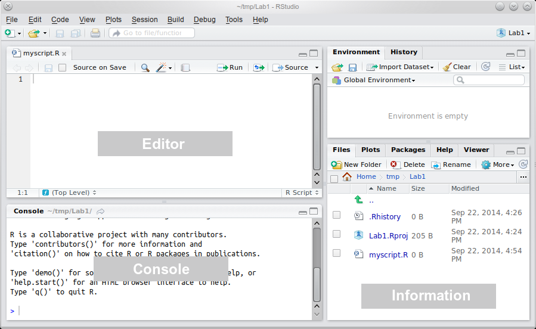
The “heart of R” is the Console window. This is where instructions are sent to R, and its responses are given. The console is, almost exclusively, the way of talking to R in RStudio.
The Information area (all of the right-hand side of RStudio) shows you useful information about the state of your project. At the moment, you can see some relevant files in the bottom pane, and an empty “Global Environment” at the top. The global environment is a virtual storage of all objects you create in R. So, for example, if you read in some data into R, this is where they will be put and where R will look for them if you tell it to manipulate or analyse the data.
Finally, the Editor is where you write more complicated scripts without having to run each command. Each script, when saved, is just a text file with some added bells and whistles. There’s nothing special about it. Indeed, if you wanted to, you could write your script in any plain text editor, save it, change its extension from .txt to .R and open it in RStudio. There is no need to do this but you could. When you run such a script file, it gets interpreted by R in a line by line fashion. This means that your data cleaning, processing, visualisation, and analysis needs to be written up in sequence otherwise R won’t be able to make sense of your script. Since the script is basically a plain text file (with some nice colours added by RStudio to improve readability), the commands you type in can be edited, added, or deleted just like if you were writing an ordinary document. You can run them again later, or build up complex commands and functions over several lines of text.
There is an important practical distinction between the Console and the Editor: In the Console, the Enter key runs the command. In the Editor, it just adds a new line. The purpose of this is to facilitate writing scripts without running each line of code. It also enables you to break down your commands over multiple lines so that you don’t end up with a line that’s hundreds of characters long. For example:
poisson_model <- glm( # R knows that an open bracket can't be the end of command...
n_events ~ gender + scale(age) + scale(n_children) + # ...nor can a plus...
I(SES - min(SES)) * scale(years_emp, , F), # ...or a comma
df, family = "poisson") # closing bracket CAN be the endThe hash (#) marks everything to the right of it as comment. Comments are useful for annotating the code so that you can remember what it means when you return to your code months later (it will happen!). It also improves code readability if you’re working on a script in collaboration with others. Comments should be clear but also concise. There is no point in paragraphs of verbose commentary.
Writing (and saving) scripts has just too many advantages over coding in the console to list and it it is crucial that you learn how to do it. It will enable you to write reproducible code you can rerun whenever needed, reuse chunks of code you created for a previous project in your analysis, and, when you realise you made a mistake somewhere (when, not if, because this too will happen!), you’ll be able to edit the code and recreate your analysis in a small fraction of the time it would take you to analyse your data anew without a script. This way, if you write a command and it doesn’t do exactly what you wanted to do, you can quickly tweak it in the editor and run it again. Also, if you accidentally modify and object and mess everything up, you can just re-run your entire script up to that point and pretend nothing ever happened. Or different still, let’s say you analysed your data and wrote your report and then you realised you made a mistake, for instance forgot to exclude data you should have excluded or excluded some you shouldn’t have. Without a “paper-trail” of your analysis, this is a very unpleasant (but, sadly, not unheard of) experience. But with a saved analysis script, you can just insert an additional piece of code in the file, re-run it and laugh it off. Or do the first two, and then take a long hard look at yourself! Whatever the case, using the script editor is just very, very useful!
However, the aim is to keep the script tidy. You don’t need to put every single line of code you ever run into it. Sometimes, you just want to look at your data, using, for example View(df). This kind of command really doesn’t need to be in your script. As a general rule of thumb, use the editor for code that adds something of value to the sequence of the script (data cleaning, analysis, code generating plots, tables, etc.) and the console for one-off commands (when you want to just check something).
Here is an example of what a neat script looks like (part of the Reproducibility Project: Psychology analysis2). Compare it to your own scripts and try to find ways of improving your coding.
For useful “good practice” guidance on how to write legible code, see the Google style guide.
Basic principles of R programming
If you want to keep it, put it in a box
Everything in life is merely transient; we ourselves are pretty ephemeral beings. (#sodeepbro) However, R takes this quality and runs with it. If you ask R to perform any operation, it will spew it out into the console and immediately forget it ever happened. Let’s show you what that means:
# create an object a and assign it the value of 1
a <- 1
# increment a by 1
a + 1## [1] 2# OK, now see what the value of a is
a## [1] 1
So, R as if forgot we asked it to do a + 1 and didn’t change its value. The only way to keep this new value is to put it in an object.
b <- a + 1
# now let's see
b## [1] 2
Think of objects as boxes. The names of the objects are only labels. Just like with boxes, it is convenient to label boxes in a way that is indicative of their contents, but the label itself does not determine the content. Sure, you can create an R object called one and store the value of 2 in it, if you wish. But you might want to think about whether or not it is a helpful name. And what kind of person that makes you… Objects can contain anything at all: values, vectors, matrices, data, graphs, tables, even code. In fact, every time you call a function, e.g., mean(), you are running the code that’s inside the object mean with whatever values you pass to the arguments of the function.
Let’s demonstrate this last point:
# let's create a vector of numbers the mean of which I want to calculate
vec <- c(103, 1, 1, 6, 3, 43, 2, 23, 7, 1)
# see what's inside
vec## [1] 103 1 1 6 3 43 2 23 7 1# let's get the mean
# mean is the sum of all values divided by the number of values
sum(vec)/length(vec)## [1] 19# good, now let's create a function that calculates
# the mean of whatever we ask it to
function(x) {sum(x)/length(x)}## function(x) {sum(x)/length(x)}# but as we discussed above, R immediately forgot about the function
# so we need to store it in a box (object) to keep it for later!
calc.mean <- function(x) {sum(x)/length(x)}
# OK, all ready now
calc.mean(x = vec)## [1] 19# the code inside the object calc.mean is reusable
calc.mean(x = c(3, 5, 53, 111))## [1] 43# to show that calc.mean is just an object with some code in it,
# you can look inside, just like with any other object
calc.mean## function(x) {sum(x)/length(x)}
## <bytecode: 0x00000000078dfdc0>
Let this be your mantra: “If I want to keep it for later, I need to put it in an object so that is doesn’t go off.”
You can’t really change an object
Unlike in the physical world, objects in R cannot truly change. The reason is that, sticking to our analogy, these objects are kind of like boxes. You can put stuff in, take stuff out and that’s pretty much it. However, unlike boxes, when you take stuff out of objects, you only take out a copy of its contents. The original contents of the box remain intact. Of course you can do whatever you want (within limits) to the stuff once you’ve taken it out of the box but you are only modifying the copy. And unless you put that modified stuff into a box, R will forget about it as soon as it’s done with it. Now, as you probably know, you can call the boxes whatever you want (again, within certain limits). What might not have occurred to you though, is that you can call the new box the same as the old one. When that happens, R basically takes the label off the old box, pastes it on the new one and burns the old box. So even though some operations in R may look like they change objects, under the hood R copies their content, modifies it, stores the result in a different object puts the same label on it and discards the original object. Understanding this mechanism will make things much easier!
Putting the above into practice, this is how you “change” an R object:
# put 1 into an object (box) called a
a <- 1
# copy the content of a, add 1 to it and store it in an object b
b <- a + 1
# copy what's inside b and put it in a new object called a
# discarding the old object a
a <- b
# now see what's inside of a
# (by copying its content and pasting it in the console)
a## [1] 2
Of course, you can just cut out the middleman (object b). So to increment a by another 1, we can do:
a <- a + 1
a## [1] 3
It’s elementary, my dear Watson
When it comes to data, every vector, matrix, list, data frame - in other words, every structure - is composed of elements. An element is a single number, boolean (TRUE/FALSE), or a character string (anything in “quotes”). Elements come in several classes:
"numeric", as the name suggests, a numeric element is a single number: 1, 2, -725, 3.14159265, etc.. A numeric element is never in ‘single’ or “double” quotes! Numbers are cool because you can do a lot of maths (and stats!) with them."character", a string of characters, no matter how long. It can be a single letter,'g', but it can equally well be a sentence,"Elen síla lumenn' omentielvo."(if you want the string to contain any single quotes, use double quotes to surround the string with and vice versa). Notice that character strings inRare always in ‘single’ or “double” quotes. Conversely anything in quotes is a character string:class(3)## [1] "numeric"class("3") # in quotes, therefore character!## [1] "character"It stands to reason that you can’t do any maths with cahracter strings, not even if it’s a number that’s inside the quotes!
"3" + "2"## Error in "3" + "2": non-numeric argument to binary operator"logical", a logical element can take one of two values,TRUEorFALSE. Logicals are usually the output of logical operations (anything that can be phrased as a yes/no question, e.g., is x equal to y?). In formal logic,TRUEis represented as 1 andFALSEas 0. This is also the case inR:# recall that c() is used to bind elements into a vector # (that's just a fancy term for an ordered group of elements) class(c(TRUE, FALSE))## [1] "logical"# we can force ('coerce', in R jargon) the vector to be numeric as.numeric(c(TRUE, FALSE))## [1] 1 0This has interesting implications. First, is you have a logical vector of many
TRUEs andFALSEs, you can quickly count the number ofTRUEs by just taking the sum of the vector:# consider vector of 50 logicals x## [1] TRUE FALSE TRUE TRUE TRUE FALSE FALSE TRUE FALSE TRUE TRUE ## [12] TRUE TRUE TRUE FALSE TRUE TRUE TRUE TRUE FALSE TRUE FALSE ## [23] TRUE FALSE TRUE FALSE TRUE TRUE FALSE FALSE FALSE FALSE FALSE ## [34] TRUE FALSE TRUE TRUE FALSE FALSE FALSE TRUE TRUE TRUE TRUE ## [45] TRUE TRUE TRUE TRUE TRUE FALSE# number of TRUEs sum(x)## [1] 31# number of FALSEs is 50 minus number of TRUEs length(x) - sum(x)## [1] 19Second, you can perform all sorts of arithmetic operations on logicals:
# TRUE/FALSE can be shortened to T/F T + T## [1] 2F - T## [1] -1(T * T) + F## [1] 1Third, you can coerce numeric elements to valid logicals:
# zero is FALSE as.logical(0)## [1] FALSE# everything else is TRUE as.logical(c(-1, 1, 12, -231.3525))## [1] TRUE TRUE TRUE TRUENow, you may wonder that use this can possible be?! Well, this way you can perform basic logical operations, such as AND, OR, and XOR (see section “Handy functions that return logicals” below):
# x * y is equivalent to x AND y as.logical(T * T)## [1] TRUEas.logical(T * F)## [1] FALSEas.logical(F * T)## [1] FALSEas.logical(F * F)## [1] FALSE# x + y is equivalent to x OR y as.logical(T + T)## [1] TRUEas.logical(T + F)## [1] TRUEas.logical(F + T)## [1] TRUEas.logical(F + F)## [1] FALSE# x - y is equivalent to x XOR y (eXclusive OR, either-or) as.logical(T - T)## [1] FALSEas.logical(T - F)## [1] TRUEas.logical(F - T)## [1] TRUEas.logical(F - F)## [1] FALSE"factor", factors are a bit weird. They are used mainly for tellingRthat a vector represents a categorical variable. For instance, you can be comparing two groups, treatment and control.# create a vector of 15 "control"s and 15 "treatment"s # rep stands for 'repeat', which is exactly what the function does x <- rep(c("control", "treatment"), each = 15) x## [1] "control" "control" "control" "control" "control" ## [6] "control" "control" "control" "control" "control" ## [11] "control" "control" "control" "control" "control" ## [16] "treatment" "treatment" "treatment" "treatment" "treatment" ## [21] "treatment" "treatment" "treatment" "treatment" "treatment" ## [26] "treatment" "treatment" "treatment" "treatment" "treatment"# turn x into a factor x <- as.factor(x) x## [1] control control control control control control control ## [8] control control control control control control control ## [15] control treatment treatment treatment treatment treatment treatment ## [22] treatment treatment treatment treatment treatment treatment treatment ## [29] treatment treatment ## Levels: control treatmentThe first thing to notice is the line under the last printout that says “
Levels: control treatment”. This informs you thatxis now a factor with two levels (or, a categorical variable with two categories).Second thing you should take note of is that the words
controlandtreatmentdon’t have quotes around them. This is another wayRuses to tell you this is a factor.With factors, it is important to understand how they are represented in
R. Despite, what they look like, under the hood, they are numbers. A one-level factor is a vector of1s, a two-level factor is a vector of1s and2s, a n-level factor is a vector of1s,2s,3s … ns. The levels, in our casecontrolandtreatment, are just labels attached to the1s and2s. Let’s demonstrate this:typeof(x)## [1] "integer"# integer is fancy for "whole number" # we can coerce factors to numeric, thus stripping the labels as.numeric(x)## [1] 1 1 1 1 1 1 1 1 1 1 1 1 1 1 1 2 2 2 2 2 2 2 2 2 2 2 2 2 2 2# see the labels levels(x)## [1] "control" "treatment"The labels attached to the numbers in a factor can be whatever. Let’s say that in your raw data file, treatment group is coded as 1 and control group is coded as 0.
# create a vector of 15 zeros and 15 ones x <- rep(0:1, each = 15) x## [1] 0 0 0 0 0 0 0 0 0 0 0 0 0 0 0 1 1 1 1 1 1 1 1 1 1 1 1 1 1 1# turn x into a factor x <- as.factor(x) x## [1] 0 0 0 0 0 0 0 0 0 0 0 0 0 0 0 1 1 1 1 1 1 1 1 1 1 1 1 1 1 1 ## Levels: 0 1Since
xis now a factor with levels0and1, we know that it is stored inRas a vector of1s and2s and the zeros and ones, representing the groups, are only labels:as.numeric(x)## [1] 1 1 1 1 1 1 1 1 1 1 1 1 1 1 1 2 2 2 2 2 2 2 2 2 2 2 2 2 2 2levels(x)## [1] "0" "1"The fact that factors in
Rare represented as labelled integers has interesting implications some of you have already come across. First, certain functions will coerce factors into numeric vectors which can shake things up. This happened when you usedcbind()on a factor with levels0and1:x## [1] 0 0 0 0 0 0 0 0 0 0 0 0 0 0 0 1 1 1 1 1 1 1 1 1 1 1 1 1 1 1 ## Levels: 0 1# let's bind the first 15 elements and the last 15 elements together as columnscbind(x[1:15], x[16:30])## [,1] [,2] ## [1,] 1 2 ## [2,] 1 2 ## [3,] 1 2 ## [4,] 1 2 ## [5,] 1 2 ## [ reached getOption("max.print") -- omitted 10 rows ]# printout truncated to first 5 rows to save spacecbind()binds the vectors you provide into the columns of a matrix. Since matrices (yep, that’s the plural of ‘matrix’; also, more on matrices later) can only containlogical,numeric, andcharacterelements, thecbind()function coerces the elements of thexfactor (haha, the X-factor) intonumeric, stripping the labels and leaving only1s and2s.The other two consequences of this labelled numbers system stem from the way the labels are stored. Every
Robject comes with a list of so called attributes attached to it. These are basically information about the object. For objects of classfactor, the attributes include its levels (or the labels attached to the numbers) and class:attributes(x)## $levels ## [1] "0" "1" ## ## $class ## [1] "factor"So the labels are stored separately of the actual elements. This means, that even if you delete some of the numbers, the labels stay the same. Let’s demonstrate this implication on the
plot()function. This function is smart enough to know that if you give it a factor it should plot it using a bar chart, and not a histogram or a scatter plot:plot(x)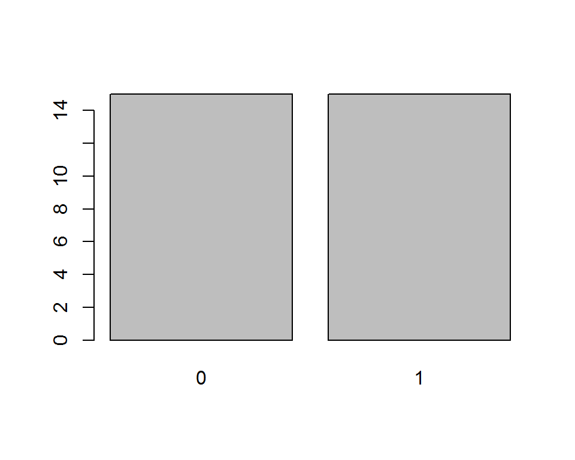
Now, let’s take the first 15 elements of
x, which are all0s and plot them:y <- x[1:15] y## [1] 0 0 0 0 0 0 0 0 0 0 0 0 0 0 0 ## Levels: 0 1plot(y)
Even though our new object
yonly includes0s, thelevelsattribute still tellsRthat this is a factor of (at least potentially) two levels:"0"and"1"and soplot()leaves a room for the1s.The last consequence is directly related to this. Since the levels of an object of class
factorare stored as its attributes, any additional values put inside the objects will be invalid and turned intoNAs (Rwill warn us of this). In other words, you can only add those values that are among the ones produced bylevels()to an object of classfactor:# try adding invalid values -4 and 3 to the end of vector x x[31:32] <- c(-4, 3)## Warning in `[<-.factor`(`*tmp*`, 31:32, value = c(-4, 3)): invalid factor ## level, NA generatedx## [1] 0 0 0 0 0 0 0 0 0 0 0 0 0 0 ## [15] 0 1 1 1 1 1 1 1 1 1 1 1 1 1 ## [29] 1 1 <NA> <NA> ## Levels: 0 1The only way to add these values to a factor is to first coerce it to
numeric, then add the values, and then turn it back intofactor:# coerce x to numeric x <- as.numeric(x[1:30]) class(x)## [1] "numeric"# but remember that 0s and 1s are now 1s and 2s! x## [1] 1 1 1 1 1 1 1 1 1 1 1 1 1 1 1 2 2 2 2 2 2 2 2 2 2 2 2 2 2 2# so subtract 1 to make the values 0s and 1s again x <- x - 1 # add the new values x <- c(x, -4, 3) # back into fractor x <- as.factor(x) x## [1] 0 0 0 0 0 0 0 0 0 0 0 0 0 0 0 1 1 1 1 1 1 1 1 ## [24] 1 1 1 1 1 1 1 -4 3 ## Levels: -4 0 1 3# SUCCESS! # reset x <- as.factor(rep(0:1, each = 15)) # one-liner x <- as.factor(c(as.numeric(x[1:30]) - 1, -4, 3)) x## [1] 0 0 0 0 0 0 0 0 0 0 0 0 0 0 0 1 1 1 1 1 1 1 1 ## [24] 1 1 1 1 1 1 1 -4 3 ## Levels: -4 0 1 3Told you factors were weird…
"ordered", finally, these are the same as factors but, in addition to having levels, these levels are ordered and thus allow comparison (notice theLevels: 0 < 1below):# coerce x to numeric x <- as.ordered(rep(0:1, each = 15)) x## [1] 0 0 0 0 0 0 0 0 0 0 0 0 0 0 0 1 1 1 1 1 1 1 1 1 1 1 1 1 1 1 ## Levels: 0 < 1# we can now compare the levels x[1] < x[30]## [1] TRUE# this is not the case with factors y <- as.factor(rep(0:1, each = 15)) y[1] < y[30]## Warning in Ops.factor(y[1], y[30]): '<' not meaningful for factors## [1] NAObjects of class
orderedare useful for storing ordinal variables, e.g., age group.
In addition to these five sorts of elements, there are three special wee snowflakes:
NA, stands for “not applicable” and is used for missing data. Unlike other kinds of elements, it can be bound into a vector along with elements of any class.NaN, stands for “not a number”. It is technically of classnumericbut only occurs as the output of invalid mathematical operations, such as dividing zero by zero or taking a square root of a negative number:0 / 0## [1] NaNsqrt(-12)## Warning in sqrt(-12): NaNs produced## [1] NaNInf(or-Inf), infinity. Reserved for division of a non-zero number by zero (no, it’s not technically right):235/0## [1] Inf-85.123/0## [1] -Inf
Data structures
So that’s most of what you need to know about elements. Let’s talk about putting elements together. As mentioned above, elements can be grouped in various data structures. These differ in the ways in which they arrange elements:
vectors arrange elements in a line. they don’t have dimensions and can only contain elements of same class (e.g.,
"numeric","character","logical").# a vector letters[5:15]## [1] "e" "f" "g" "h" "i" "j" "k" "l" "m" "n" "o"If you try to force elements of different classes to a single vector, they will all be converted to the most complex class. The order of complexity, from least to most complex, is:
logical,numeric, andcharacter. Elements of classfactorandorderedcannot be meaningfully bound in a vector with other classes (nor with each other): they either get converted tonumeric,character- if you’re lucky - or toNA.# c(logical, numeric) results in numeric x <- c(T, F, 1:6) x## [1] 1 0 1 2 3 4 5 6class(x)## [1] "integer"# integer is like numeric but only for whole numbers to save computer memory # adding character results in character x <- c(x, "foo") # the numbers 1-6 are not numeric any more! x## [1] "1" "0" "1" "2" "3" "4" "5" "6" "foo"class(x)## [1] "character"matrices arrange elements in a square/rectangle, i.e., a two-dimensional arrangement of rows and columns. They can also only accommodate elements of the same class and cannot store attributes of elements. That means, you can’t use them to store (ordered) factors.
# a matrix matrix(rnorm(20, 1, 1), ncol = 5) # must be square/rectangular## [,1] [,2] [,3] [,4] [,5] ## [1,] 1.3703738 0.02838157 2.0164687 1.4942382 1.8680573 ## [2,] 0.6601934 0.98266333 1.9127939 0.5697085 0.9316377 ## [3,] -0.4162806 -0.70061675 1.3357769 0.9055796 0.7237693 ## [4,] 1.1379062 1.35230585 0.6664777 -0.8765787 2.7783476# not suitable for factors x <- factor(rbinom(10, 1, .5)) x## [1] 1 0 0 1 1 0 0 1 1 0 ## Levels: 0 1# not factors any more! matrix(x, ncol = 5)## [,1] [,2] [,3] [,4] [,5] ## [1,] "1" "0" "1" "0" "1" ## [2,] "0" "1" "0" "1" "0"lists arrange elements in a collection of vectors or other data structures. Different vectors/structures can be of different lengths and contain elements of different classes. Elements of lists and, by extension, data frames can be accessed using the
$operator, provided we gave them names.# a list my_list <- list( # 1st element of list is a numeric matrix A = matrix(rnorm(20, 1, 1), ncol = 5), # 2nd element is a character vector B = letters[1:5], # third is a data.frame C = data.frame(x = c(1:3), y = LETTERS[1:3]) ) my_list## $A ## [,1] [,2] [,3] [,4] [,5] ## [1,] 1.1716086 1.7888513 1.76755367 0.6813674 1.394846 ## [2,] 1.6286185 -0.3893254 -0.80009419 1.4199387 2.653588 ## [3,] 1.8615041 0.4864447 2.16010423 -0.2256427 2.083310 ## [4,] 0.1689491 1.4276158 -0.04089346 2.9019714 1.626414 ## ## $B ## [1] "a" "b" "c" "d" "e" ## ## $C ## x y ## 1 1 A ## 2 2 B ## 3 3 C# we can use the $ operator to access NAMED elements of lists my_list$B## [1] "a" "b" "c" "d" "e"# this is also true for data frames my_list$C$x## [1] 1 2 3# but not for vectors or matrices my_list$A$1## Error: <text>:2:11: unexpected numeric constant ## 1: # but not for vectors or matrices ## 2: my_list$A$1 ## ^data frames are lists but have an additional constraint: all the vectors of a
data.framemust be of the same length. That is the reasons why your datasets are always rectangular.
Different data structures are useful for different things but bear in mind that, ultimately, they are all just bunches of elements. This understanding is crucial for working with data.
There are only three ways to ask for elements
Now that you understand that all data boil down to elements, let’s look at how to ask R for the elements you want.
As the section heading suggests, there are only three ways to do this:
- indices
- logical vector
- names (only if elements are named, usually in lists and data frames)
Let’s take a closer look at these ways one at a time.
Indices
The first way to ask for an element is to simply provide the numeric position of the desired element in the structure (vector, list…) in a set of square brackets [] at the end of the object name:
x <- c("I", " ", "l", "o", "v", "e", " ", "R")
# get the 6th element
x[6]## [1] "e"
To get more than just one element at a time, you need to provide a vector of indices. For instance, to get the elements 3-6 of x, we can do:
x[3:6]## [1] "l" "o" "v" "e"# equivalent to
x[c(3, 4, 5, 6)]## [1] "l" "o" "v" "e"
Remember that some structures can contain as their elements other structures. For example asking for the first element of my_list will return:
my_list[1]## $A
## [,1] [,2] [,3] [,4] [,5]
## [1,] 1.1716086 1.7888513 1.76755367 0.6813674 1.394846
## [2,] 1.6286185 -0.3893254 -0.80009419 1.4199387 2.653588
## [3,] 1.8615041 0.4864447 2.16010423 -0.2256427 2.083310
## [4,] 0.1689491 1.4276158 -0.04089346 2.9019714 1.626414
The $A at the top of the output indicates that we have accessed the element A of my_list but not really accessed the matrix itself. Thus, at this stage, we wouldn’t be able to ask for its elements. To access the matrix contained in my_list$A, we need to write either exactly that, or use double brackets:
my_list[[1]]## [,1] [,2] [,3] [,4] [,5]
## [1,] 1.1716086 1.7888513 1.76755367 0.6813674 1.394846
## [2,] 1.6286185 -0.3893254 -0.80009419 1.4199387 2.653588
## [3,] 1.8615041 0.4864447 2.16010423 -0.2256427 2.083310
## [4,] 0.1689491 1.4276158 -0.04089346 2.9019714 1.626414# with the $A now gone from output, we can access the matrix itself
my_list[[1]][1]## [1] 1.171609
As discussed above, some data structures are dimensionless (vectors, lists), while others are arranged in n-dimensional rectangles (where n > 1). When indexing/subsetting elements of dimensional structures, we need to provide coordinates of the elements for each dimension. This is done by providing n numbers or vectors in the []s separated by a comma.
A matrix, for instance has 2 dimensions, rows and columns. The first number/vector in the []s represents rows and the second columns. Leaving either position blank will return all rows/columns:
mat <- matrix(LETTERS[1:20], ncol = 5)
mat## [,1] [,2] [,3] [,4] [,5]
## [1,] "A" "E" "I" "M" "Q"
## [2,] "B" "F" "J" "N" "R"
## [3,] "C" "G" "K" "O" "S"
## [4,] "D" "H" "L" "P" "T"# blank spaces technically not needed but improve code readability
mat[1, ] # first row## [1] "A" "E" "I" "M" "Q"mat[ , 1] # first column## [1] "A" "B" "C" "D"mat[c(2, 4), ] # rows 2 and 4, notice the c()## [,1] [,2] [,3] [,4] [,5]
## [1,] "B" "F" "J" "N" "R"
## [2,] "D" "H" "L" "P" "T"mat[c(2, 4), 1:3] # elements 2 and 4 of columns 1-3## [,1] [,2] [,3]
## [1,] "B" "F" "J"
## [2,] "D" "H" "L"
To get the full matrix, we simply type its name. However, you can think of the same operation as asking for all rows and all columns of the matrix:
mat[ , ] # all rows, all columns## [,1] [,2] [,3] [,4] [,5]
## [1,] "A" "E" "I" "M" "Q"
## [2,] "B" "F" "J" "N" "R"
## [3,] "C" "G" "K" "O" "S"
## [4,] "D" "H" "L" "P" "T"
The same is the case with data frames:
df <- data.frame(id = LETTERS[1:6],
group = rep(c("Control", "Treatment"), each = 3),
score = rnorm(6, 100, 20))
df## id group score
## 1 A Control 92.96711
## 2 B Control 104.93446
## 3 C Control 102.25468
## 4 D Treatment 125.55803
## 5 E Treatment 127.78118
## 6 F Treatment 84.23250df[1, ] # first row## id group score
## 1 A Control 92.96711df[4:6, c(1, 3)]## id score
## 4 D 125.5580
## 5 E 127.7812
## 6 F 84.2325
Take home message: when using indices to ask for elements, remember that to request more than one, you need to give a vector of indices (i.e., numbers bound in a c()). Also remember that some data structures need you to specify dimensions separated by a comma (most often just rows and columns for matrices and data frames).
Logical vectors
The second way of asking for elements is by putting a vector of logical (AKA Boolean) values in the []s. An important requirement here is that the vector must be the same length as the one being subsetted. So, for a vector with three elements, we need to provide three logical values, TRUE for “I want this one” and FALSE for “I don’t want this one”. Let’s demonstrate this on the same vector we used for indices:
x <- c("I", " ", "l", "o", "v", "e", " ", "R")
# get the 6th element
x[c(F, F, F, F, F, T, F, F)]## [1] "e"#get elements 3-6
x[c(F, F, T, T, T, T, F, F)]## [1] "l" "o" "v" "e"
All the other principles we talked about regarding indexing apply also to logical vectors. Note also, that higher 2D structures need a logical row vector and a logical column vector:
# recall our mat
mat## [,1] [,2] [,3] [,4] [,5]
## [1,] "A" "E" "I" "M" "Q"
## [2,] "B" "F" "J" "N" "R"
## [3,] "C" "G" "K" "O" "S"
## [4,] "D" "H" "L" "P" "T"# rows 2 and 4
mat[c(T, F, T, F), ]## [,1] [,2] [,3] [,4] [,5]
## [1,] "A" "E" "I" "M" "Q"
## [2,] "C" "G" "K" "O" "S"# element 4 of rows 1 and 2
mat[c(F, F, F, T), c(T, T, F, F, F)]## [1] "D" "H"# you can even COMBINE the two ways!
mat[4, c(T, T, F, F, F)]## [1] "D" "H"
And as if vectors weren’t enough, you can even use matrices of logical values to subset matrices and data frames:
mat_logic <- matrix(c(rep(c(F, T), each = 3), rep(F, 9), c(T, T, T)), ncol = 3)
mat_logic## [,1] [,2] [,3]
## [1,] FALSE FALSE FALSE
## [2,] FALSE FALSE FALSE
## [3,] FALSE FALSE FALSE
## [4,] TRUE FALSE TRUE
## [5,] TRUE FALSE TRUE
## [6,] TRUE FALSE TRUEdf[mat_logic]## [1] "D" "E" "F" "125.55803" "127.78118" " 84.23250"
Notice, however, that the output is a vector so two things happened: first, the rectangular structure has been erased and second, since vectors can only contain elements of the same class (see above), the numbers got converted into character strings (hence the ""s). Nevertheless, this method of subsetting using logical matrices can be useful for replacing several values in different rows and columns with another value:
# replace with NAs
df[mat_logic] <- NA
df## id group score
## 1 A Control 92.96711
## 2 B Control 104.93446
## 3 C Control 102.25468
## 4 <NA> Treatment NA
## 5 <NA> Treatment NA
## 6 <NA> Treatment NA
To use a different example, take the function lower.tri(). It can be used to subset a matrix in order to get the lower triangle (with or without the diagonal). Consider matrix mat2 which has "L"s in its lower triangle, "U"s in its upper triangle, and "D"s on the diagonal:
## [,1] [,2] [,3] [,4]
## [1,] "D" "U" "U" "U"
## [2,] "L" "D" "U" "U"
## [3,] "L" "L" "D" "U"
## [4,] "L" "L" "L" "D"
Let’s use lower.tri() to ask for the elements in its lower triangle:
mat2[lower.tri(mat2)]## [1] "L" "L" "L" "L" "L" "L"# we got only "L"s, good!
Adding the , diag = T will return the lower triangle along with the diagonal:
mat2[lower.tri(mat2, diag = T)]## [1] "D" "L" "L" "L" "D" "L" "L" "D" "L" "D"# we got only "L"s and "D"s
So what does the function actually do? What is this sorcery? Let’s look at the output of the function:
lower.tri(mat2)## [,1] [,2] [,3] [,4]
## [1,] FALSE FALSE FALSE FALSE
## [2,] TRUE FALSE FALSE FALSE
## [3,] TRUE TRUE FALSE FALSE
## [4,] TRUE TRUE TRUE FALSESo the function produces a matrix of logicals, the same size as out mat2, with TRUEs in the lower triangle and FALSEs elsewhere. What we did above is simply use this matrix to subset mat2[].
If you’re curious how the function produces the logical matrix then, first of all, that’s great, keep it up and second, you can look at the code wrapped in the lower.tri object (since functions are only objects of a special kind with code inside instead of data):
lower.tri
function (x, diag = FALSE)
{
x <- as.matrix(x)
if (diag)
row(x) >= col(x)
else row(x) > col(x)
}
<bytecode: 0x0000000015a39ab0>
<environment: namespace:base>Right, let’s see. If we set the diag argument to TRUE the function returns row(x) >= col(x). If we leave it set to FALSE (default), it returns row(x) > col(x). Let’s substitute x for our mat2 and try it out:
row(mat2)## [,1] [,2] [,3] [,4]
## [1,] 1 1 1 1
## [2,] 2 2 2 2
## [3,] 3 3 3 3
## [4,] 4 4 4 4col(mat2)## [,1] [,2] [,3] [,4]
## [1,] 1 2 3 4
## [2,] 1 2 3 4
## [3,] 1 2 3 4
## [4,] 1 2 3 4# diag = TRUE case
row(mat2) >= col(mat2)## [,1] [,2] [,3] [,4]
## [1,] TRUE FALSE FALSE FALSE
## [2,] TRUE TRUE FALSE FALSE
## [3,] TRUE TRUE TRUE FALSE
## [4,] TRUE TRUE TRUE TRUE# use it for subsetting mat2
mat2[row(mat2) >= col(mat2)]## [1] "D" "L" "L" "L" "D" "L" "L" "D" "L" "D"# diag = FALSE case
row(mat2) > col(mat2)## [,1] [,2] [,3] [,4]
## [1,] FALSE FALSE FALSE FALSE
## [2,] TRUE FALSE FALSE FALSE
## [3,] TRUE TRUE FALSE FALSE
## [4,] TRUE TRUE TRUE FALSEmat2[row(mat2) > col(mat2)]## [1] "L" "L" "L" "L" "L" "L"
MAGIC!
Take home message: When subsetting using logical vectors, the vectors must be the same length as the vectors you are subsetting. The same goes for logical matrices: they must be the same size as the matrix/data frame you are subsetting.
Complementary subsetting
Both of the aforementioned ways of asking for subsets of data can be inverted. For indices, you can simply put a - sign before the vector:
# elements 3-6 of x
x[3:6]## [1] "l" "o" "v" "e"# invert the selection
x[-(3:6)]## [1] "I" " " " " "R"#equivalent to
x[c(1, 2, 7, 8)]## [1] "I" " " " " "R"
For logical subsetting, you need to negate the values. That is done using the logical negation operator ‘!’ (AKA “not”):
y <- T
y## [1] TRUE# negation
!y## [1] FALSE# also works for vectors and matrices
mat_logic## [,1] [,2] [,3]
## [1,] FALSE FALSE FALSE
## [2,] FALSE FALSE FALSE
## [3,] FALSE FALSE FALSE
## [4,] TRUE FALSE TRUE
## [5,] TRUE FALSE TRUE
## [6,] TRUE FALSE TRUE!mat_logic## [,1] [,2] [,3]
## [1,] TRUE TRUE TRUE
## [2,] TRUE TRUE TRUE
## [3,] TRUE TRUE TRUE
## [4,] FALSE TRUE FALSE
## [5,] FALSE TRUE FALSE
## [6,] FALSE TRUE FALSEdf[!mat_logic]## [1] "A" "B" "C" "Control" "Control"
## [6] "Control" "Treatment" "Treatment" "Treatment" " 92.96711"
## [11] "104.93446" "102.25468"
Names - $ subsetting
We already mentioned the final way of subsetting elements when we talked about lists and data frames. To subset top-level elements of a named list or columns of a data frame, we can use the $ operator.
df$group## [1] Control Control Control Treatment Treatment Treatment
## Levels: Control TreatmentWhat we get is a single vector that can be further subsetted using indices or logical vectors:
df$group[c(3, 5)]## [1] Control Treatment
## Levels: Control Treatment
Bear in mind that all data cleaning and transforming ultimately boils down to using one, two, or all of these three ways of subsetting elements!
Think of commands in terms of their output
In order to be able to manipulate your data, you need to understand that any chunk of code is just a formal representation of what the code is supposed to be doing, i.e., its output. That means that you are free to put code inside []s but only so long as the output of the code is either a numeric vector (of valid values - you cannot ask for x[c(3, 6, 7)] if x has only six elements) or a logical vector/matrix of the same length/size as the object that is being subsetted. Put any other code inside []s and R will return an error (or even worse, quietly produce some unexpected behaviour)!
So the final point we would like to stress is that you need to…
Know what to expect
You should not be surprised by the outcome of R. If you are, that means you do not entirely understand what you asked R to do. A good way to practice this understanding is to tell yourself what form of output and what values you expect a command to return.
For instance, in the code above, we did x[-(3:6)]. Ask yourself what does the -(3:6) return. How and why is it different from -3:6? What will happen if you do x[-3:6]?
-(3:6)## [1] -3 -4 -5 -6-3:6## [1] -3 -2 -1 0 1 2 3 4 5 6x[-3:6]## Error in x[-3:6]: only 0's may be mixed with negative subscriptsIf any of the output above surprised you, try to understand why. What were your expectations? Do you now, having seen the actual output, understand what those commands do?
Some of you were wondering why, when replacing values in column 1 of matrix mat that are larger than, say, 2 with NAs, you had to specify the column several times, e.g.:
mat[mat[ , 1] > 2, 1] <- NA
## 2 instances of mat[ , 1] in total:
# 1. outer
mat[..., 1]
# 2. comparison
mat[ , 1] > ...Let’s consider matrix mat:
## [,1] [,2] [,3] [,4] [,5] [,6]
## [1,] 0.3912438 -1.0136406 -0.4972359 0.11264633 0.2726172 0.3609614
## [2,] 0.7631231 -1.2849180 0.2334388 -0.02962719 -2.3731168 0.1808640
## [3,] 2.4322500 -0.1238812 2.5282831 -1.72971427 -1.4836162 -0.2459970
## [4,] -0.1972545 -0.7411251 -0.5954317 -0.53345641 -1.0930413 3.0332115
## [5,] -1.0673023 0.7638842 -1.0119192 -1.05720168 -0.7615397 0.9094214
and think of the command in terms of the expected outcome of its constituent elements. The logical operator ‘>’ returns a logical vector corresponding to the answer to the question “is the value to the left of the operator larger than that to the right of the operator?” The answer can only be TRUE or FALSE. So mat[ , 1] > 2 will return:
## [1] FALSE FALSE TRUE FALSE FALSEThere is no way of knowing that these values correspond to the 1st column of mat just from the output alone. That information has been lost.
This means that, if we type mat[mat[ , 1] > 2, ], we are passing a vector of T/Fs to the row position of the []s. The logical vector itself contains no information about it coming from a comparison of the 1st row of mat to the value of 2. So R can only understand the command as mat[c(FALSE, FALSE, TRUE, FALSE, FALSE), ] and will try to recycle the vector FALSE, FALSE, TRUE, FALSE, FALSE for every column of mat:
mat[mat[ , 1] > 2, ]## [1] 2.4322500 -0.1238812 2.5282831 -1.7297143 -1.4836162 -0.2459970
If you want to only extract values from mat[ , 1] that correspond to the TRUEs, you must tell R that, hence the apparent (but not actual) repetition in mat[mat[ , 1] > 2, 1].
mat[mat[ , 1] > 2, 1] <- NA
mat## [,1] [,2] [,3] [,4] [,5] [,6]
## [1,] 0.3912438 -1.0136406 -0.4972359 0.11264633 0.2726172 0.3609614
## [2,] 0.7631231 -1.2849180 0.2334388 -0.02962719 -2.3731168 0.1808640
## [3,] NA -0.1238812 2.5282831 -1.72971427 -1.4836162 -0.2459970
## [4,] -0.1972545 -0.7411251 -0.5954317 -0.53345641 -1.0930413 3.0332115
## [5,] -1.0673023 0.7638842 -1.0119192 -1.05720168 -0.7615397 0.9094214
This feature might strike some as redundant but it is actually the only sensible way. The fact that R is not trying to guess what columns of the data you are requesting from the syntax of the code used for subsetting the rows (and vice versa) means, that you can subset matrix A based on some comparison of matrix B (provided they are the same size). Or, you can replace values of mat[ , 3] based on some condition concerning mat[ , 2]. That can be very handy!
It may take some time to get the hang of this but we cannot overstate the importance of knowing what the expected outcome of your commands is.
Putting it all together
Now that we’ve discussed the key principles of talking to computers, let’s solidify this new understanding using an example you will often encounter. According to our second principle, if we want to keep it for later, we must put it in an object. Let’s have a look at some health and IQ data stored in some data frame object called df:
head(df)## ID Agegroup ExGroup IQ
## 1 1 1 1 89.95680
## 2 2 1 1 104.35860
## 3 3 1 1 98.56626
## 4 4 1 1 118.60979
## 5 5 1 1 116.72901
## 6 6 1 999 107.97970
Now, let’s replace all values of IQ that are further than \(\pm 2\) standard deviations from the mean of the variable with NAs.
First, we need to think conceptually and algorithmically about this task: What does it actually mean for a data point to be further than \(\pm 2\) standard deviations from the mean? Well, that means that if \(Mean(x) = 100\) and \(std.dev(x) = 15.34\), we want to select all data points (elements of x) that are either smaller than \(100 - 2 \times 15.34 = 69.32\) or larger than \(100 + 2 \times 15.34 = 130.68\).
# let's start by calculating the mean
# (the outer brackets are there for instant printing)
# na.rm = T is there to disregard any potential NAs
(m_iq <- mean(df$IQ, na.rm = T))## [1] 99.99622# now let's get the standard deviation
(sd_iq <- sd(df$IQ, na.rm = T))## [1] 15.34238# now calculate the lower and upper critical values
(crit_lo <- m_iq - 2 * sd_iq)## [1] 69.31145(crit_hi <- m_iq + 2 * sd_iq)## [1] 130.681
This tells us that we want to replace all elements of df$IQ that are smaller than 69.31 or larger than 130.68. Let’s do this!
# let's get a logical vector with TRUE where IQ is larger then crit_hi and
# FALSE otherwise
condition_hi <- df$IQ > crit_hi
# same for IQ smaller than crit_lo
condition_lo <- df$IQ < crit_lo
Since we want all data points that fulfil either condition, we need to use the OR operator. The R symbol for OR is a vertical bar “|” (see bottom of document for more info on logical operators):
# create logical vector with TRUE if df$IQ meets
# condition_lo OR condition_hi
condition <- condition_lo | condition_hi
Next, we want to replace the values that fulfil the condition with NAs, in other words, we want to do a little subsetting. As we’ve discussed, there are only two ways of doing this: indices and logicals. If we heed principles 5 and 6, think of our code in terms of its output and know what to expect, we will understand that the code above returns a logical vector of length(df$IQ) with TRUEs in places corresponding to positions of those elements of df$IQ that are further than \(\pm 2SD\) from the mean and FALSEs elsewhere. Let’s check:
condition## [1] FALSE FALSE FALSE FALSE FALSE FALSE FALSE FALSE FALSE TRUE TRUE
## [12] FALSE FALSE FALSE FALSE FALSE FALSE FALSE FALSE FALSE FALSE FALSE
## [23] FALSE FALSE FALSE FALSE FALSE FALSE FALSE FALSE FALSE FALSE FALSE
## [34] FALSE FALSE FALSE FALSE FALSE FALSE FALSE FALSE FALSE FALSE FALSE
## [45] FALSE FALSE FALSE FALSE FALSE FALSE FALSE FALSE FALSE FALSE FALSE
## [56] FALSE FALSE FALSE FALSE FALSE FALSE FALSE FALSE FALSE FALSE FALSE
## [67] FALSE FALSE FALSE FALSE TRUE FALSE FALSE FALSE FALSE FALSE TRUE
## [78] FALSE FALSE FALSE FALSE FALSE FALSE FALSE FALSE FALSE FALSE FALSE
## [89] FALSE FALSE FALSE FALSE FALSE FALSE FALSE FALSE FALSE FALSE FALSE
## [100] FALSE FALSE FALSE FALSE FALSE FALSE FALSE FALSE FALSE FALSE FALSE
## [111] FALSE FALSE FALSE FALSE FALSE FALSE FALSE FALSE FALSE FALSE FALSE
## [122] TRUE FALSE FALSE TRUE FALSE FALSE FALSE FALSE FALSE FALSE FALSE
## [133] TRUE FALSE TRUE FALSE FALSE FALSE FALSE FALSE FALSE FALSE FALSE
## [144] FALSE FALSE FALSE FALSE FALSE FALSE FALSE FALSE FALSE FALSE FALSE
## [155] FALSE FALSE FALSE FALSE FALSE FALSE FALSE FALSE FALSE FALSE FALSE
## [166] FALSE FALSE FALSE FALSE FALSE TRUE FALSE FALSE FALSE FALSE FALSE
## [177] FALSE FALSE FALSE FALSE FALSE FALSE FALSE FALSE FALSE FALSE FALSE
## [188] FALSE FALSE FALSE FALSE FALSE FALSE FALSE FALSE FALSE FALSE FALSE
## [199] FALSE FALSE FALSE FALSE FALSE FALSE FALSE FALSE FALSE FALSE FALSE
## [210] FALSE FALSE TRUE FALSE FALSE FALSE FALSE FALSE FALSE FALSE FALSE
## [221] FALSE FALSE FALSE FALSE FALSE FALSE FALSE FALSE FALSE FALSE FALSE
## [232] FALSE FALSE FALSE FALSE FALSE FALSE FALSE FALSE FALSE FALSE FALSE
## [243] FALSE FALSE FALSE FALSE TRUE FALSE FALSE FALSE FALSE FALSE FALSE
## [254] FALSE FALSE FALSE FALSE FALSE FALSE FALSE FALSE FALSE FALSE FALSE
## [265] FALSE FALSE FALSE FALSE FALSE TRUE FALSE FALSE FALSE FALSE FALSE
## [276] FALSE FALSE FALSE FALSE FALSE FALSE FALSE FALSE FALSE FALSE FALSE
## [287] FALSE TRUE FALSE FALSE FALSE FALSE FALSE FALSE FALSE FALSE FALSE
## [298] FALSE FALSE FALSE FALSE FALSE FALSE FALSE FALSE FALSE FALSE FALSE
## [309] FALSE FALSE FALSE FALSE FALSE FALSE FALSE FALSE FALSE FALSE FALSE
## [320] FALSE FALSE FALSE FALSE FALSE FALSE# now let's use this object to index out elements of df$IQ which
# fulfil the condition
df$IQ[condition]## [1] 20.00000 132.35251 58.85790 132.98465 58.24403 135.92026 132.92835
## [8] 130.98682 61.39313 67.00030 135.09655 55.77873 68.37715
Finally, we want to replace these values with NAs. That’s easy right? All we need to do is to put this vector into []s next to df$IQ (or df[["IQ"]], df[ , "IQ"], df[ , 4], or different still, df[[4]]) and assign the value of NA to them:
df$IQ[condition] <- NA
# see the result (only rows with NAs in IQ)
df[is.na(df[[4]]), ]## ID Agegroup ExGroup IQ
## 10 10 1 1 NA
## 11 11 1 1 NA
## 71 71 1 2 NA
## 77 77 1 2 NA
## 122 122 1 2 NA
## 125 125 1 2 NA
## 133 133 1 2 NA
## 135 135 1 2 NA
## 171 171 2 1 NA
## 212 212 2 1 NA
## 247 247 2 2 NA
## 270 270 2 2 NA
## 288 288 2 2 NASUCCESS!
We replaced outlying values of IQ with NAs. Or, to be pedantic (and that is a virtue when talking to computers), we took the labels identifying the elements mat[c(FALSE, FALSE, TRUE, FALSE, FALSE), ] of the df$IQ vector, put those labels on a bunch of NAs and burned the original elements. All that because you cannot really change an R object.
Are there quicker ways?
You might be wondering if there are other ways of achieving the same outcome, perhaps with fewer steps. Well, aren’t you lucky, there are indeed! For instance, you can put all of the code above in a single command, like this:
# IQ[(IQ is smaller than mean - 2SD) OR (IQ is larger than mean + 2SD)] <- NA
df$IQ[(df$IQ < mean(df$IQ, na.rm = T) - 2 * sd(df$IQ, na.rm = T)) |
(df$IQ > mean(df$IQ, na.rm = T) + 2 * sd(df$IQ, na.rm = T))] <- NA
Of course, fewer commands doesn’t necessarily mean better code. The above has the benefit of not creating any additional objects (m_iq, condition_lo, etc.) and not cluttering your environment. However, it may be less intelligible to a novice R user (the annotation does help though).
A particularly smart an elegant way would be to realise that the condition above is the same as saying we want all the points xi for which \(|x_i - Mean(x)| > 2 \times 15.34\). The \(x_i - Mean(x)\) has the effect of centring x so that its mean is zero and the absolute value (\(|...|\)) disregards the sign. Thus \(|x| > 1\) is the same as \(x < -1\) OR \(x > 1\).
Good, so the condition we want to apply to subset the IQ variable of df is abs(df$IQ - mean(df$IQ, na.rm = T)) > 2 * sd(df$IQ, na.rm = T). The rest, is the same:
df$IQ[abs(df$IQ - mean(df$IQ, na.rm = T)) > 2 * sd(df$IQ, na.rm = T)] <- NA
This is quite a neat way of replacing outliers with NAs and code like this shows a desire to make things elegant and efficient. However, all three approaches discussed above (and potentially others) are correct. If it works, it’s fine!
Elementary, my dear Watson! ;)
Functions
Every operation on a value, vector, object, and other structures in R is done using functions. You’ve already used several: c() is a function, as are <-, +, -, *, etc. A function is a special kind of object that takes some arguments and uses them to run the code contained inside of it. Every function has the form function.name() and the arguments are given inside the brackets. Arguments must be separated with a comma. Different functions take different number of various arguments. The help file brought up by the ?... gives a list of arguments used by the given function along with the description of what the arguments do and what legal values they take.
Let’s look at the most basic functions in R: the assignment operator <- and the concatenate function c(). Yes, <- is a function, even though the way it’s used differs from most other functions. It takes exactly two arguments – a name of an object to the left of it and an object or a value to the right of it. the output of this function is an object with the provided name containing the values assigned:
# arg 1: name function arg 2: value
x <- 3
# print x
x## [1] 3# arg 1: name function arg 2: object + value
y <- x + 7
y## [1] 10The c() function, on the other hand takes an arbitrary number of arguments, including none at all. The arguments can either be single values (numeric, character, logical, NA), or objects. The function then outputs a single vector consisting of all the arguments:
c(1, 5, x, 9, y)## [1] 1 5 3 9 10Packages
All functions in R, except the ones you write yourself or copy from online forums, come in packages. These are essentially folders that contain all the code that gets run whenever you use a function along with help files and some other data. Basic R installation comes with several packages and every time you open R or RStudio, some of these will get loaded, making the functions these packages contain available for you to use. That’s why you don’t have to worry about packages when using functions such as c(), mean(), or plot().
Other functions however come in packages that either don’t get loaded automatically upon startup or need to be installed. For instance, a very handy package for data visualisation that is not installed automatically is ggplot2. If we want to make use of the many functions in this package, we need to first install it using the install.packages() command:
install.packages("ggplot2")Notice that the name of the package is in quotes. This is important. Without the quotes, the command will not work!
You only ever need to install a package once. R will go online, download the package from the package repository and install it on your computer.
Once we’ve installed a package, we need to load it so that R can access the functions provided in the package. This is done using the library() command:
library(ggplot2) # no quotes needed this timePackages have to be loaded every session. If you load a package, you can use its functions until you close R. When you re-open it, you will have to load the package again. For that reason, it is very useful to load all the packages you will need for your data processing, visualisation, and analysis at the very beginning of your script.
Now that we have made ggplot2 available for our current R session, we can use any of its functions. For a quick descriptive plot of the a variable, we can use the qplot() function:
qplot(rnorm(1000, 100, 15)) # random normal variable of 1000 values with mean = 100 and sd = 15## `stat_bin()` using `bins = 30`. Pick better value with `binwidth`.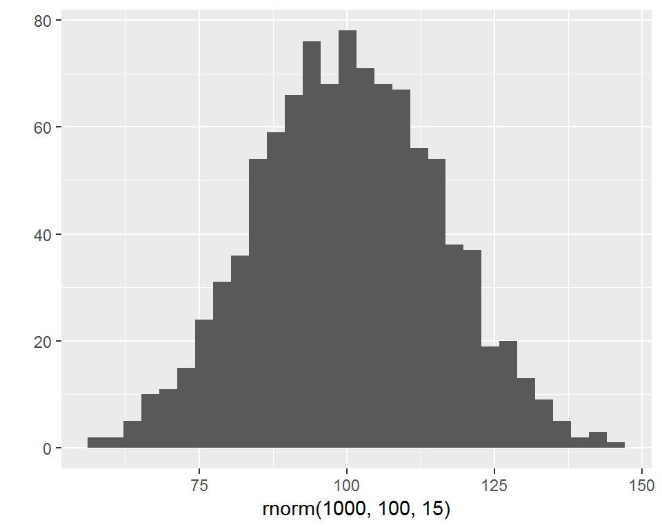
If you don’t install or load the package that contains the function you want to use, R will tell you that it cannot find the function. Let’s illustrate this on the example of a function describe() from the package psych which is pre-installed but not loaded at startup:
describe(df$ID)## Error in describe(df$ID): could not find function "describe"Once, we load the psych package, R will be able to find the function:
library(psych)##
## Attaching package: 'psych'## The following objects are masked from 'package:ggplot2':
##
## %+%, alphadescribe(df$ID)## vars n mean sd median trimmed mad min max range skew kurtosis
## X1 1 325 163 93.96 163 163 120.09 1 325 324 0 -1.21
## se
## X1 5.21Using functions
The ()s
As a general rule of thumb, the way to tell R that the thing we are calling is a function is to put brackets – () – after the name, e.g., data.frame(), rnorm(), or factor(). The only exception to this rule are operators – functions that have a convenient infix form – such as the assignment operators (<-, =), mathematical operators (+, ^, %%, …), logical operators (==, >, %in%, …), and a handful of others. Even the subsetting square brackets [] are a function! However, the infix form is just a shorthand and all of these can be used in the standard way functions are used:
2 + 3 # infix form## [1] 5`+`(2, 3) # prefix form, notice the backticks## [1] 5The above is to explain the logic behind a simple principle in R programming: If it is a function (used in its standard prefix form) then it must have ()s. If it is not a function, then it must NOT have them. If you understand this, you will never attempt to run commands like as.factor[x] or my_data(...)!
Specifying arguments
The vast majority of functions require you to give it at least one argument. Arguments of a function are often named. From the point of view of a user of a function, these names are only placeholders for some values we want to pass to the function. In RStudio, you can type the name of a function, open the bracket and then press the Tab key to see a list of arguments the function takes. You can try it now, type, for instance, sd( and press the Tab key. You should see a pop-up list of two arguments – x = and na.rm = – appear.
This means, that to use the sd() function explicitly, we much give it two arguments: a numeric vector and a single logical value (technically, a logical vector of length 1):
sd(x = c(-4, 1, 100, 52, -32, 0.5433, NA), na.rm = FALSE)## [1] NAThe output of the function is NA because our vector contained an NA value and the na.rm = argument that removes the NAs was set to FALSE. Try setting it to TRUE (or T if you’re a lazy typist) and see what R gives you.
Look what happens when we run the following command:
sd(x = c(-4, 1, 100, 52, -32, 0.5433)) # no NAs this time## [1] 47.83839We didn’t specify the value of the na.rm = argument but the code worked anyway. Why might that be…?
Default values of arguments
The reason for this behaviour is that functions can have arguments set to some value by default to facilitate the use of the functions in the most common situations by reducing the amount of typing. Look at the documentation for the sd() function (by running ?sd in the console).
You should see that under “Usage” it reads sd(x, na.rm = FALSE). This means that, by default, the na.rm = argument is set to FALSE and if you don’t specify its value manually, the function will run with this setting. Re-visiting our example with the NA value, you can see that the output is as it was before:
sd(c(-4, 1, 100, 52, -32, 0.5433, NA))## [1] NAArgument matching
I hope you noticed a tiny change in the way the first argument was specified in the line above (coding is a lot about attention to detail!) – there is no x = in the code.
The reason why R is still able to understand what we meant is argument matching. If no names are given to the arguments, R assumes they are entered in the order in which they were specified when the function was created. This is the same order you can look up in the “Usage” section of the function documentation (using ?)
To give you another example, take rnorm() for instance. If you pull up the documentation (AKA help) of the file with ?rnorm, you’ll see that it takes 3 arguments: n =, mean =, and sd =. The latter two have default values but n = doesn’t so we must provide its value.
Setting the first argument to 10 and omitting the other 2 will generate a vector of 10 numbers drawn from a normal distribution with \(\mu = 0\) and \(\sigma=1\):
rnorm(10)## [1] 0.44514249 -0.65354743 0.97071325 -1.41165988 1.30213132
## [6] 0.62221239 0.62509819 0.66633024 -0.08840721 -0.87655898Lets say we want to change the mean to -5 but keep standard deviation the same. Relying on argument matching, we can do:
rnorm(10, -5)## [1] -4.605582 -4.429689 -7.066562 -3.853686 -6.378937 -3.351862 -5.960775
## [8] -4.667923 -5.209164 -5.634772However, if we want to change the sd = argument to 3 but leave mean = set to 0, we need to let R know this more explicitly. There are several ways to do the same thing but they all rely on the principle that unnamed values will be interpreted in order of arguments:
rnorm(10, 0, 3) # keep mean = 0## [1] -1.4476624 -1.5569000 -3.2872737 -1.7069369 -0.1663810 -3.2178542
## [7] 3.7924622 -0.2482697 0.7459269 0.2624408rnorm(10, , 3) # skip mean = (DON'T DO THIS! it's illegible)## [1] -2.8575296 -3.0395982 2.2014543 1.1821557 -1.7059114 -4.6273286
## [7] 2.7564689 -0.3081537 -4.8456423 -2.0217861If the arguments are named, they can be entered in any order:
rnorm(sd = 2, n = 10, mean = -100)## [1] -100.58007 -97.11879 -102.65779 -97.37064 -100.82222 -95.62135
## [7] -97.61336 -98.89056 -101.03561 -100.25113The important point here is that if you give a function 4 (for example) unnamed values separated with commas, R will try to match them to the first 4 arguments of the function. If the function takes fewer than arguments or if the values are not valid for the respective arguments, R will throw an error:
rnorm(100, 5, -3, 8) # more values than arguments## Error in rnorm(100, 5, -3, 8): unused argument (8)That is, it will throw an error if you’re lucky. If you’re not, you might get all sorts of unexpected behaviours:
rnorm(10, T, -7) # illegal values passed to arguments## Warning in rnorm(10, T, -7): NAs produced## [1] NaN NaN NaN NaN NaN NaN NaN NaN NaN NaNPassing vectors as arguments
The majority of functions – and you’ve already seen quite a few of these – have at least one argument that can take multiple values. The x = (first) argument of sample() or the labels = argument of factor() are examples of these.
Imagine we want to sample 10 draws with replacement from the words “elf”, “orc”, “hobbit”, and “dwarf”. Your intuition might be to write something like sample("elf", "orc", "hobbit", "dwarf", 10). That will however not work:
sample("elf", "orc", "hobbit", "dwarf", 10, replace = T)## Error in sample("elf", "orc", "hobbit", "dwarf", 10, replace = T): unused arguments ("dwarf", 10)
Take a moment to ponder why this produces an error…
Yes, you’re right, it has to do with argument matching! R interprets the above command as you passing five arguments to the sample() function, which only takes three arguments. Moreover, the second argument size = must be a positive number, replace = must be a single logical value, and prob = is a vector of numbers between 0 and 1 that must add up to 1 and the vector must be of the same length as the vector passed to the first x = argument. As you can see, our command fails on most of these criteria.
So, how do we tell R that we want to pass the four races of Middle-earth to the first argument of sample()? Well, we need to bind them into a single vector using the c() function:
sample(c("elf", "orc", "hobbit", "dwarf"), 10, T)## [1] "elf" "hobbit" "dwarf" "elf" "dwarf" "elf" "orc"
## [8] "elf" "elf" "elf"Remember: If you want to pass a vector of values into a single argument of a function, you need to use an object in your environment containing the vector or a function that outputs a vector. The basic one is c() but others work too, e.g., sample(5:50, 10) (the : operator returns a vector containing a complete sequence of integers between the specified values).
Passing objects as arguments
Everything in R is an object and thus the values passed as arguments to functions are also objects. It is completely up to you whether you want to create the object ad hoc for the purpose of only passing it to a function or whether you want to pass to a function an object you already have in your environment. For example, if our four races are of particular interest to us and we want to keep them for future use, we can assign them to the environment under some name:
ME_races <- c("elf", "orc", "hobbit", "dwarf")
ME_races # here they are## [1] "elf" "orc" "hobbit" "dwarf"Then, we can just use them as arguments to functions:
factor(sample(1:4, 20, T), labels = ME_races)## [1] dwarf dwarf hobbit hobbit orc hobbit elf hobbit elf hobbit
## [11] dwarf dwarf elf dwarf dwarf orc hobbit dwarf hobbit orc
## Levels: elf orc hobbit dwarfFunction output
Command is a representation of its output
Any complete command in R, such as the one above is merely a symbolic representation of the output it returns. Understanding this is crucial! Just like in a natural language, there are many ways to say the same thing, there are multiple ways of producing the same output in R. It’s not called a programming language for nothing!
One-way street
Another important thing to realise is that, given that there are many ways to do the same thing in R, there is a sort of directionality to the relationship between a command and its output. If you know what a function does, you can unambiguously tell what the output will be given specified arguments. However, once the output is produced, there is no way R can tell what command was used.
Imagine you have three bakers making the same kind of bread: one uses the traditional kneading method, one uses the slap-and-fold technique, and one uses a mixer. If you know the recipe and the procedure they are using, you will be able to tell what they’re making. However, once you have your three loaves in front of you, you won’t be able to say which came from which baker. It’s the same thing with commands in R!
This is the reason why some commands look like they’re repeating things beyond necessity. Take, for instance, this line:
mat[lower.tri(mat)] <- "L"The lower.tri() function takes a matrix as its first argument and returns a matrix of logicals with the same dimensions as the matrix provided. Once it returns its output, R has no way of knowing what matrix was used to produce it and so it has no clue that it has anything to do with our matrix mat. That’s why, if we want to modify the lower triangle of mat, we do it this way.
Obviously, nothing is stopping you from creating the logical matrix by means of some other approach and then use it to subset mat but the above solution is both more elegant and more intelligible.
Knowe thine output as thou knowest thyself
Because more often than not you will be using function to create some object only so that you can feed it into another function, it is essential that you understand what you are asking R to do and know what result you are expecting. There should be no surprises!
A good way to practice is to say to yourself what the output of a command will be before you run it. For instance, the command factor(sample(1:4, 20, T), labels = ME_races) returns a vector of class factor and length 20 containing randomly sampled values labelled according to the four races of Middle-earth we worked with.
Output is an object
Notice that in the code above we passed the sample(1:4, 20, T) command as the first argument of factor(). This works because – as we mentioned earlier – a command is merely a symbolic representation of its output and because everything in R is an object. This means that function output is also an object. Depending on the particular function, the output can be anything from, e.g., a logical vector of length 1 through long vectors and matrices to huge data frames and complex lists of lists of lists…
For instance, the t.test() function returns a list that contains all the information about the test you might ever need:
t_output <- t.test(rnorm(100, 5, 2), mu = 0)
str(t_output) # see the structure of the object## List of 9
## $ statistic : Named num 25
## ..- attr(*, "names")= chr "t"
## $ parameter : Named num 99
## ..- attr(*, "names")= chr "df"
## $ p.value : num 1.51e-44
## $ conf.int : num [1:2] 4.7 5.51
## ..- attr(*, "conf.level")= num 0.95
## $ estimate : Named num 5.1
## ..- attr(*, "names")= chr "mean of x"
## $ null.value : Named num 0
## ..- attr(*, "names")= chr "mean"
## $ alternative: chr "two.sided"
## $ method : chr "One Sample t-test"
## $ data.name : chr "rnorm(100, 5, 2)"
## - attr(*, "class")= chr "htest"If we want to know the p-value of the above test, we can simply query the list accordingly:
t_output$p.value## [1] 1.510504e-44Because the command only represents the output object, it can be accessed in the same way. Say you are running some kind of simulation study and are only interested in the t-statistic of the test. Instead of saving the entire output into some kind of named object in the environment, you can simply save the t:
t_stat <- t.test(rnorm(100, 5, 2), mu = 0)$statistic
t_stat## t
## 22.52332Where does the output go?
Let’s go back to discussing factor(). There’s another important issue that sometime causes a level of consternation among novice R users. Imagine we have a data set and we want to designate one of its columns as a factor so that R knows that the column contains a categorical variable.
df <- data.frame(id = 1:10, x = rnorm(10))
df## id x
## 1 1 0.19788843
## 2 2 -0.31447492
## 3 3 1.09184756
## 4 4 -0.12181494
## 5 5 0.71449861
## 6 6 -1.06642256
## 7 7 -0.35148831
## 8 8 -0.26774027
## 9 9 0.08599967
## 10 10 0.15901187An intuitive way of turning id into a factor might be:
factor(df$id)## [1] 1 2 3 4 5 6 7 8 9 10
## Levels: 1 2 3 4 5 6 7 8 9 10This, however, does not work:
class(df$id)## [1] "integer"The reason for this has to do with the fact that the argument-output relationship is directional. Once the object inside df$id is passed to factor(), R forgets about the fact that it had anything to do with df or one of its columns. It has therefore no way of knowing that you want to be modifying a column of a data frame. Because of that, the only place factor() can return the output to is the one it uses by default.
Console
The vast majority of functions return their output into the console. factor() is one of these functions. That’s why when you type in the command above, you will see the printout of the output in the console. Once it’s been returned, the output is forgotten about – R can’t see the console or read from it!
This is why factor(df$id) does not turn the id column of id into a factor.
Environment
A small number of functions return a named object to the global R environment, where you can see, access, and work with it. The only one you will need to use for a long time to come (possibly ever) is the already familiar assignment operator <-.
You can use <- to create new objects in the environment or re-assign values to already existing names. So, if you want to turn the id column of df into a factor you need to reassign some new object to df$id. What object? Well, the one returned by the factor(...) command above:
df$id <- factor(df$id)As you can see, there is no printout now because the output of factor() has been passed into the assignment function which directed it into the df$id object. Let’s make sure it really worked:
class(df$id)## [1] "factor"Graphical device
Functions that create graphics return their output into something called the graphical device. It is basically the thing responsible for drawing stuff on the screen of your computer. You’ve already encountered some of these functions – plot(), par(), lines(), abline().
Files
Finally, there are functions that can write output into all sorts of files. For instance, if you want to save a data frame into a .csv file, you can use the read.csv() function.
Of course, you can redirect where particular output gets sent, just like we did with df$id <- factor(...). For instance, you can save a plot into the global environment using assignment:
my_plot <- hist(rnorm(1000))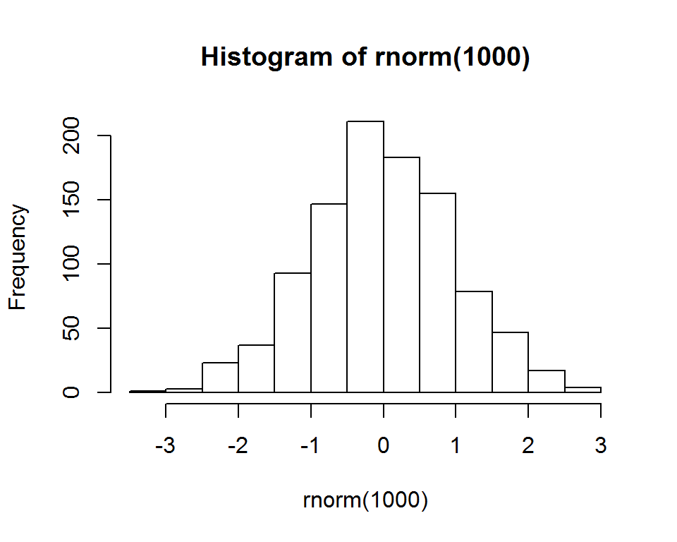
my_plot## $breaks
## [1] -3.5 -3.0 -2.5 -2.0 -1.5 -1.0 -0.5 0.0 0.5 1.0 1.5 2.0 2.5 3.0
##
## $counts
## [1] 1 3 23 37 93 147 211 183 155 79 47 17 4
##
## $density
## [1] 0.002 0.006 0.046 0.074 0.186 0.294 0.422 0.366 0.310 0.158 0.094
## [12] 0.034 0.008
##
## $mids
## [1] -3.25 -2.75 -2.25 -1.75 -1.25 -0.75 -0.25 0.25 0.75 1.25 1.75
## [12] 2.25 2.75
##
## $xname
## [1] "rnorm(1000)"
##
## $equidist
## [1] TRUE
##
## attr(,"class")
## [1] "histogram"Alternatively, you can export it by creating a new graphical device inside of a file:
# create a graphical device in a new my_plot.png
# file in the working directory
png("my_plot.png")
hist(rnorm(100)) # create plot
# close the graphical device
dev.off()Making the computer do the heavy lifting
Avoiding repetition and avoiding repetition
Data manipulation and analysis often carries the burden of repetition. For instance, we might have to clean each of several many variables according to the same set of rules or repeat the same statistical test over many variables (and of course, adequately correct for multiple testing afterwards!).Every time you encounter repetitive tasks like these, you should start thinking about how to delegate as much of the legwork as possible on the computer.
This is where loops come in very handy. They are used to repeat a block of code an arbitrary number of times. Let’s look at the anatomy of a loop in R:
for (i in n) {
# code
}the for () {} bit is just syntax and it’s sole function is to tell R that this is a loop. The bit in () defines the iterator variable i and the vector n over which the loop iterates. So for (i in 1:10) will be a loop that runs through 10 times. First, it will assign i the value of 1 and run the rest of the code. Then, it will assign it the next value in the n vector, e.g., 2 and run the code again. It will repeat until it runs out of elements of n.
To demonstrate:
for (i in 1:5) {
print(i)
}## [1] 1
## [1] 2
## [1] 3
## [1] 4
## [1] 5As you can see, the loop printed the value of i for each of the 5 iterations.
The code in the body of the loop {} can do whatever you want. you can use the current value of i to create, modify, or subset data structures, to do calculations with it, or simply not use it at all. The world’s your oyster!
Finally, loops can be nested, if needed:
for (i in n) {
for (j in m) {
# code
}
}This will run all the iterations of the inner loop for each iteration of the outer one.
You will often want to save the output of each iteration of the loop. There are again many ways to do this but a straight-forward one is to first create an empty object and then start combining it with the output of the loop:
out <- c() # empty vector
for (i in 1:10) {
# append the result of some operation to to the vector
out <- c(out, i * 3)
}
out## [1] 3 6 9 12 15 18 21 24 27 30
Let’s see how we can use loops to do something useful. Imagine we have 5 numeric variables and we want to report their correlations along with p-values. It would be nice to put everything in a single correlation matrix with r coefficients in the upper triangle and the p-values in the lower, like this:
## X1 X2 X3 X4 X5
## X1 0.000 -0.050 0.717 0.572 -0.071
## X2 0.624 0.000 0.041 -0.126 0.871
## X3 0.000 0.685 0.000 0.371 0.045
## X4 0.000 0.212 0.000 0.000 -0.185
## X5 0.486 0.000 0.657 0.066 0.000Let’s say, our data are stored in an object called cor_data that looks like this (first 6 rows):
head(cor_data)## X1 X2 X3 X4 X5
## 1 -0.7760171 0.5034248 -0.9973242 -2.1457715 0.5773653
## 2 -1.5334259 0.3223977 -1.6006086 -1.8296133 0.1210231
## 3 -1.1903521 0.1069940 1.0961066 -1.6376892 0.4155795
## 4 1.1975834 -0.7438349 1.9551914 -1.3193825 -0.5288266
## 5 0.5017491 0.6918580 1.8418708 -0.6811992 0.2094496
## 6 0.0498220 -0.6999150 0.1298702 -0.5695184 -0.6601252Getting the correlation coefficients is simple, we can just use R’s cor() function:
cor(cor_data)## X1 X2 X3 X4 X5
## X1 1.00000000 -0.04960247 0.71683553 0.5720835 -0.07050284
## X2 -0.04960247 1.00000000 0.04112369 -0.1259891 0.87138444
## X3 0.71683553 0.04112369 1.00000000 0.3707252 0.04490691
## X4 0.57208352 -0.12598911 0.37072515 1.0000000 -0.18488377
## X5 -0.07050284 0.87138444 0.04490691 -0.1848838 1.00000000As you can see, the matrix is symmetrical along its diagonal: the upper triangle is the same as the lower one. What we want to do now is to replace the elements of the lower triangle with the p-values corresponding to the correlation coefficients. To get the p-value for a correlation of two variables, we can use the cor.test() function:
cor.test(cor_data$X1, cor_data$X2)##
## Pearson's product-moment correlation
##
## data: cor_data$X1 and cor_data$X2
## t = -0.49164, df = 98, p-value = 0.6241
## alternative hypothesis: true correlation is not equal to 0
## 95 percent confidence interval:
## -0.2436468 0.1482601
## sample estimates:
## cor
## -0.04960247The output of this function is a list and we can use $ to isolate the p-value:
cor.test(cor_data$X1, cor_data$X2)$p.value## [1] 0.62407So what we need now is a loop that takes each pair of variables one at a time, gets the p-value from the cor.test() function and puts it the correct place in the correlation matrix. For this, we need a nested loop, with one level defining the first of the pair of variables to correlate and the other defining the second:
cmat <- cor(cor_data) # stores correlation matrix in an object
for (i in 1:ncol(cor_data)) { # i goes from 1 to the number of variables in data - 5
for (j in i:ncol(cor_data)) { # j goes from i to number of vars in data
cmat[j, i] <- # jth row of ith column of cmat will be replaced with...
cor.test(cor_data[ , i], # cor.test p-value for ith variable...
cor_data[ , j])$p.value # ...and jth variable
}
}
# let's see what cmat looks like now, rounded to 3 decimal places
round(cmat, 3)## X1 X2 X3 X4 X5
## X1 0.000 -0.050 0.717 0.572 -0.071
## X2 0.624 0.000 0.041 -0.126 0.871
## X3 0.000 0.685 0.000 0.371 0.045
## X4 0.000 0.212 0.000 0.000 -0.185
## X5 0.486 0.000 0.657 0.066 0.000At this stage, this might not seem like an easy task but, with a little practice and dedication, you can learn how to use loops to save yourself a lot of time and effort!
The apply() family
Another way of telling R to do a repetitive task is using the apply() family functions. These function take some data structure and apply any function to each element of that structure.
To illustrate, let’s look at apply(). Imagine I have a data frame df like this:
## id X1 X2 X3 X4 X5
## 1 1 0.495165867 -0.1003261 -0.67466862 1.4816999 -0.05907539
## 2 2 0.144476326 1.0462967 0.92845069 1.6588901 2.85525217
## 3 3 0.193855613 0.6733134 -0.12197759 1.2581624 -0.39226893
## 4 4 0.005333401 1.3498878 0.87212764 0.9700450 0.74089151
## 5 5 -0.068982604 0.2994682 0.06349587 -0.4404737 0.89800281
## 6 6 2.634679412 0.6238107 0.77947377 -1.9623934 0.25419083let’s say I want to know which of the X1-X5 columns contains the largest value for each participant. If we only take the first row, for example, then the task is easy, right?
df[1, 2:6]## X1 X2 X3 X4 X5
## 1 0.4951659 -0.1003261 -0.6746686 1.4817 -0.05907539which.max(df[1, 2:6])## X4
## 4If we want to know this bit of information for every row of the data frame, doing it manually is quite tedious. We could instead use a for loop:
max_col <- c()
for (i in 1:nrow(df)) max_col <- c(max_col, which.max(df[i, 2:6]))
max_col## X4 X5 X4 X2 X5 X1 X4 X4 X4 X5 X5 X5 X1 X5 X3 X1 X1 X4 X2 X4
## 4 5 4 2 5 1 4 4 4 5 5 5 1 5 3 1 1 4 2 4This loop iterates over the rows of df (for (i in 1:nrow(df))) and for each cycle it adds the output of the which.max() function to the max_col variable.
There is nothing wrong with this approach but it is a little wordy to write and not the fastest when it comes to computation time. The apply() function can be used to achieve the same outcome faster and using less code:
max_col2 <- apply(X = df[ , 2:6], MARGIN = 1, FUN = which.max)
max_col2## [1] 4 5 4 2 5 1 4 4 4 5 5 5 1 5 3 1 1 4 2 4all(max_col == max_col2) # result is the same## [1] TRUESo how does this work? apply() requires 3 arguments: - X – a matrix (remember that data frames can be treated as matrices) - MARGIN – 1 for by row, 2 for by column - FUN – name of function to apply (notice no ()s)
Other arguments can be provided, for example na.rm = T if the function applied takes the na.rm = argument (e.g., mean()).
The function takes the matrix provided to the X = argument and applies the function passed to FUN = along the margin (rows/columns) of the matrix, specified by the MARGIN = argument.
This is useful, don’t you think? The function becomes even more useful when you realise you can apply your own functions (more on writing functions later). Let’s say, we want to know the standard error estimate based on the 5 values for each participant:
# define function (std error = sd / sqrt(n))
std.error <- function(x, na.rm) sd(x, na.rm = na.rm)/sqrt(length(na.omit(x)))
apply(df[ , 2:6], 1, std.error, na.rm = T) # na.rm value will get passed on to std.error## [1] 0.3638791 0.4517579 0.2935590 0.2203090 0.2220297 0.7337676 0.4885579
## [8] 0.3456699 0.3500479 0.3486136 0.4143358 0.3933710 0.3914274 0.3691898
## [15] 0.5572517 0.5410737 0.3693525 0.1702969 0.2920959 0.2644269You don’t even have to create a function object!
# same thing, different way
apply(df[ , 2:6], 1,
function(x) sd(x, na.rm = T)/sqrt(length(na.omit(x))))## [1] 0.3638791 0.4517579 0.2935590 0.2203090 0.2220297 0.7337676 0.4885579
## [8] 0.3456699 0.3500479 0.3486136 0.4143358 0.3933710 0.3914274 0.3691898
## [15] 0.5572517 0.5410737 0.3693525 0.1702969 0.2920959 0.2644269To give another example, this is how you can calculate the standard deviation of each of the X columns of df.
apply(df[ , 2:6], 2, sd, na.rm = T)## X1 X2 X3 X4 X5
## 0.9049994 0.8041659 0.7801702 0.9960338 1.2471791There are quite a few functions in the apply() family (e.g., vapply(), tapply(), mapply(), sapply()), each doing something slightly different and each appropriate for a different data structure (vector, matrix, list, data.frame) and different task. You can read about all of them, if you want but we’d like to tell you about one in particular – lapply()
The lapply() function takes a list (list apply) and applies a function to each of its elements. The function returns a list. This function is useful because data frames can also be treated as lists. This is what you do every time you use the $ operator.
So, to do Task 1 using lapply(), you can simply do:
lapply(df[ , 2:6], sd, na.rm = T)## $X1
## [1] 0.9049994
##
## $X2
## [1] 0.8041659
##
## $X3
## [1] 0.7801702
##
## $X4
## [1] 0.9960338
##
## $X5
## [1] 1.247179If you don’t want the output to be a list, just use unlist():
unlist(lapply(df[ , 2:6], sd, na.rm = T))## X1 X2 X3 X4 X5
## 0.9049994 0.8041659 0.7801702 0.9960338 1.2471791Say we want to round all the X columns to 2 decimal places. That means, that we want to assign to columns 2-6 of df values corresponding to rounded versions of the same columns:
df[ , 2:6] <- lapply(df[ , 2:6], round, 2)
head(df)## id X1 X2 X3 X4 X5
## 1 1 0.50 -0.10 -0.67 1.48 -0.06
## 2 2 0.14 1.05 0.93 1.66 2.86
## 3 3 0.19 0.67 -0.12 1.26 -0.39
## 4 4 0.01 1.35 0.87 0.97 0.74
## 5 5 -0.07 0.30 0.06 -0.44 0.90
## 6 6 2.63 0.62 0.78 -1.96 0.25So these are the two most useful functions from the apply() family you should know. As a general tip, you can use apply() for by-row operations and lapply() for by-column operations on data frames. The nice thing about these function is that they help you avoid repetitive code. For instance, you can now turn several columns of your data set into factors using something like df[ , c(2, 5, 7, 8)] <- lapply(df[ , c(2, 5, 7, 8)], factor). Cool, innit?
Conditional code evaluation
if
The idea is pretty simple – sometimes you want some code to run under certain circumstances but not under others. This is what conditional code evaluation is for and this is what it looks like:
if (condition) {
code
}The (not actual) code above is how you tell R to run whatever code if and only if the condition is met. It then follows that whatever the condition is, it must evaluate to a single boolean (TRUE/FALSE):
cond <- TRUE
if (cond) {
print(paste0("Condition was ", cond, ", so code is evaluated."))
}
print("Next line of code...")## [1] "Condition was TRUE, so code is evaluated."
## [1] "Next line of code..."If we change cond to FALSE, the code in the curly braces will be skipped:
cond <- FALSE
if (cond) {
print(paste("Condition was", cond, ", so code is evaluated."))
}
print("Next line of code...")## [1] "Next line of code..."Pretty straight-forward, right?
OK, now, the condition can be whatever logical operation that returns a single boolean, not just TRUE or FALSE. Here’s an example of something more useful:
x <- rnorm(100)
x[sample(100, 2)] <- NA # introduce 2 NAs in random places
if (any(is.na(x))) {
print("There are missing values in x")
}
print("Next line of code...")## [1] "There are missing values in x"
## [1] "Next line of code..."Here, the x vector is checked for NA values using is.na(). The function, however, returns one boolean per element of x and not just a single T/F. The any() function checks the returned vector of logicals and if there are any Ts, returns TRUE and if not, returns FALSE.
It might also be reasonable to have different chunks of code you want to run, one if condition is met, the other if it isn’t. You could do it with multiple if statements:
x <- rnorm(100)
if (any(is.na(x))) {
print("There are missing values in x")
}
if (!any(is.na(x))) { # if there are no NAs
print("There are NO missing values in x")
}
print("Next line of code...")## [1] "There are NO missing values in x"
## [1] "Next line of code..."It is a bit cumbersome though, don’t you think?
else
Luckily, there’s a better way of doing the same thing – the else statement:
x <- rnorm(100)
if (any(is.na(x))) {
print("There are missing values in x")
} else { # if there are no NAs
print("There are NO missing values in x")
}
print("Next line of code...")## [1] "There are NO missing values in x"
## [1] "Next line of code..."Here, if the any(is.na(x)) condition evaluates to TRUE, the first line of code is run and the second one is skipped. If it’s FALSE, the code in the else clause will be the one that gets run.
So, if there are only two outcomes of the test inside the condition clause that we want to run contingent code for, if () {} else {} is the syntax to use. Bear in mind, however, that sometimes, there might be more than two meaningful outcomes. Look at the following example:
x <- "blue"
if (x == "blue") {
print(paste("Her eyes were", x))
} else {
print(paste("Her eyes were not blue, they were", x))
}
print("Next line of code...")## [1] "Her eyes were blue"
## [1] "Next line of code..."else if
You should now be able to understand the following code without much help:
x <- "green"
if (x == "blue") {
print(paste("Her eyes were", x))
} else if (x == "brown") {
print(paste("As is the case with most people, her eyes were", x))
} else if (x %in% c("green", "grey")) {
print(paste("She was one of those rare people whose eyes were", x))
}
print("Next line of code...")## [1] "She was one of those rare people whose eyes were green"
## [1] "Next line of code..."If you feel like it, you can put the code above inside a for loop, assigning x values of "blue", "brown", "grey", "green", and – I don’t know – "long", one at a time and see the output.
for (x in c("blue", "brown", "grey", "green", "long")) {
if (x == "blue") {
print(paste("Her eyes were", x))
} else if (x == "brown") {
print(paste("As is the case with most people, her eyes were", x))
} else if (x %in% c("green", "grey")) {
print(paste("She was one of those rare people whose eyes were", x))
}
print("Next line of code...")
}## [1] "Her eyes were blue"
## [1] "Next line of code..."
## [1] "As is the case with most people, her eyes were brown"
## [1] "Next line of code..."
## [1] "She was one of those rare people whose eyes were grey"
## [1] "Next line of code..."
## [1] "She was one of those rare people whose eyes were green"
## [1] "Next line of code..."
## [1] "Next line of code..."The point the example above is aiming to get across is that, when using else, you need to make sure that the code after the clause is appropriate for all all possible scenarios, where the condition in if is FALSE.
ifelse()
In situations, where you are happy that there are indeed only two sets of outcomes of your condition, you can use the shorthand function ifelse(). Take a look at the following code example:
apples <- data.frame(
colour = c("green", "green", "red", "red", "green"),
taste = c(4.3, 3.5, 3.9, 2.7, 6.4)
)
apples$redness <- ifelse(apples$colour == "red", 1, 0)
apples$redness## [1] 0 0 1 1 0What is happening here? In this command, a new variable is being created in the apples data frame called redness. To decide what value to give each case (row) for this variable, an ifelse statement is used. For each row in the data, the value of the redness variable is based on the value of the colour variable. When colour is red, the value for redness is 1, for any other value of colour - redness; will be 0.
ifelse() has the following general formulation:
ifelse(condition,
value to return if TRUE,
value to return if FALSE)As you might see, a nice advantage of ifelse() over if () {} else {} is that it is vectorised, meaning it will evaluate for every element of the vector in condition. On the flip side, ifelse() can only return a single object, while the code inside if () {} else {} can be arbitrarily long and complex. For that reason, ifelse() is best for simple conditional assignment (e.g., x <- ifelse(...)), while if () {} else {} is used for more complex conditional branching of your code. As with many other things in programming (and statistics), it’s a case of horses for courses…
To consolidate this, let’s look at the data frame again:
head(apples)## colour taste redness
## 1 green 4.3 0
## 2 green 3.5 0
## 3 red 3.9 1
## 4 red 2.7 1
## 5 green 6.4 0For the first two rows, the condition evaluates to FALSE because the first two values in the colour variable are not "red". Therefore, the first two elements of our outcome (the new variable redness) are set to 0. The next two values in the colour variable were "red" so, for these elements, the condition evaluated to TRUE and thus the next two values of redness were set to 1.
Nesting clauses
The level of conditional evaluation shown above should give you the necessary tools for most conditional tasks. However, if you’re one of those people who like to do really complicated things, then a) what are you doing with your life? and b) bear in mind if, else, and ifelse() can be combined and nested to an arbitrary level of complexity:
# not actual code!
if (cond_1) {
if (cond_1_1) {
...
} else if (cond_1_2) {
...
} else {
x <- ifelse(cond_1_3_1, ..., ...)
}
} else (cond_2) {
x <- ifelse(cond_2_1,
ifelse(cond_2_1_1, ..., ...),
...)
} ...Same rules apply. If you’re brave (or foolhardy) enough to get into this kind of programming, then please make sure all your opening and closing brackets and curly braces are paired up in the right place, otherwise fixing your code will be a right bag of giggles!
Writing your own functions
Admittedly, this section about user-defined functions is a little bit advanced. However, the ability to write your own functions is an immensely powerful tool for data processing and analysis so you are encouraged to put some effort into understanding how functions work and how you can write your own. It’s really not difficult!
Functions are objects too!
It’s probably getting a bit old at this stage but everything in R is an object. And since functions are a subset of everything, they also are objects. They are essentially chunks of code stored into a named object that sits in some environment. User-defined functions will be located in the global environment, while functions from packages (either pre-loaded ones or those you load using library()) sit in the environments of their respective packages.
If you want to see the code inside a function, just type it into the console without the brackets and press Enter. You might remember this chap:
lower.tri## function (x, diag = FALSE)
## {
## d <- dim(x)
## if (length(d) != 2L)
## d <- dim(as.matrix(x))
## if (diag)
## .row(d) >= .col(d)
## else .row(d) > .col(d)
## }
## <bytecode: 0x000000000c8820c0>
## <environment: namespace:base>Anatomy of a function
Looking at the code above you can see the basic structure of a function:
- First, it’s specified that this object is a
function - Second, in the
()s, there’s the specifications of the argument the function takes including any default values- As you can see
lower.tri()takes two arguments,xanddiag, the latter of which is set by default toFALSE
- As you can see
- Third, there is the body of the function enveloped in a set of curly braces
{}which includes the actual code that does the function’s magic - Finally, there is some meta-information including the environment in which the function lives (in this case, it’s the
"base"package)
Notice that the function code only works using the x and diag objects. No matter what you pass to the function’s x argument will – as far as the function is concerned – be called x. That is why R doesn’t know where the value passed to the arguments of functions come from!
DIY
To make your own function, all you need to do is follow the syntax above, come up with your own code, and assign the function object to a name in your global R environment:
my_fun <- function(arg1, arg2, arg3, ...) {
some code using args
return(object to return)
}The return() function is not strictly speaking necessary but it’s good practice to be explicit about this of the many potential objects inside of the function’s environment you want to return to the global environment.
Let’s start with something simple. Let’s write a function that takes as its only argument a person’s name and returns a greeting:
hello <- function(name) {
out <- paste0("Hello ", name, "!")
return(out)
}So, we created a named object hello and assigned it a function of one argument name =. Inside the {}s, there is code that creates and object out with a character string created from pasting together "Hello ", whatever gets passed to the name = argument, and an exclamation point. Finally, this out gets returned into the global environment.
Let’s see if it works:
hello("Tim")## [1] "Hello Tim!"Nice! Not extremely useful but nice…
Let’s create a handier function. One thing that is sometimes done when cleaning data is removing outlying values. Wouldn’t it be useful to have a function that does it for us? (Aye, it would!)
Basic boxplots are quite a good way of identifying outliers. Let’s demonstrate this:
x <- rnorm(100)
x[82] <- 15.82 # add a large number
boxplot(x)
OK, as the boxplot clearly shows, there’s a few outlying values in the x variable. As you now surely know, everything in R is an object and so we can look at the object returned by boxplot() to see if we can use it to identify which element in x is the culprits:
bxplt <- boxplot(x)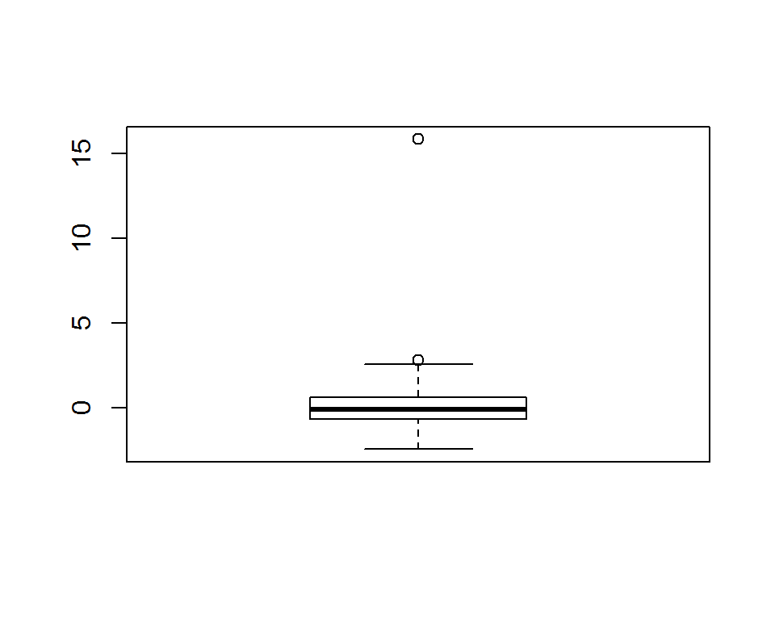
str(bxplt)## List of 6
## $ stats: num [1:5, 1] -2.4317 -0.6693 -0.0794 0.6393 2.5585
## $ n : num 100
## $ conf : num [1:2, 1] -0.286 0.127
## $ out : num [1:2] 2.81 15.82
## $ group: num [1:2] 1 1
## $ names: chr "1"The str() function shows us the structure of the boxplot() output object. On inspection, you can see that the $out element of the list returned by the function includes the outlying values. The one we imputed manually (15.82) is there, which is a good sanity check. Let’s extract only these values:
outl <- boxplot(x, plot = F)$out # don't show plot
outl## [1] 2.812612 15.820000Cool, all we need to do now is replace the values of x that are equal to these values with NAs:
x %in% outl## [1] FALSE FALSE FALSE FALSE FALSE FALSE FALSE FALSE FALSE FALSE FALSE
## [12] FALSE FALSE FALSE FALSE FALSE FALSE FALSE FALSE FALSE FALSE FALSE
## [23] FALSE FALSE FALSE FALSE FALSE FALSE FALSE FALSE FALSE FALSE FALSE
## [34] FALSE FALSE FALSE FALSE FALSE FALSE FALSE FALSE FALSE FALSE FALSE
## [45] FALSE FALSE FALSE FALSE FALSE FALSE FALSE FALSE FALSE FALSE FALSE
## [56] FALSE FALSE FALSE FALSE FALSE FALSE FALSE FALSE FALSE FALSE FALSE
## [67] FALSE FALSE FALSE FALSE FALSE FALSE FALSE TRUE FALSE FALSE FALSE
## [78] FALSE FALSE FALSE FALSE TRUE FALSE FALSE FALSE FALSE FALSE FALSE
## [89] FALSE FALSE FALSE FALSE FALSE FALSE FALSE FALSE FALSE FALSE FALSE
## [100] FALSEx[x %in% outl] <- NAWe can now look at x to see that the outlying values have been replaced with NAs:
x## [1] 0.65301213 1.36477405 -0.49024354 -0.37622141 1.66235050
## [6] 0.04712926 0.04765791 0.57083032 0.48564181 -0.52822866
## [11] 0.74665955 0.86095702 -0.09443577 0.63800346 0.42609437
## [16] -0.09253372 -0.05368078 -0.75648670 -0.63652645 -0.33673349
## [21] -0.41648553 0.70037751 -1.08138959 0.03528570 0.70031115
## [26] 0.25246088 -0.82686922 0.09725755 -0.91783365 0.51352649
## [31] -0.18254072 0.37083031 -1.62437366 0.68765563 -0.40817166
## [36] 1.65234721 -1.47979178 -0.21001617 -2.10730329 0.56476216
## [41] 0.05585627 -1.80156744 1.07748354 -0.08487237 -2.16644762
## [46] -0.40924855 -0.54726640 -0.02618497 -1.41991927 -0.19247460
## [51] -0.80135377 1.31981496 1.50374639 1.26725726 -0.87717699
## [56] -0.93929744 2.55853346 -0.51385435 1.78187139 -0.07250234
## [61] -0.07386911 -1.30572303 0.80371687 -0.06396831 1.25480570
## [66] 0.92960686 -0.10711837 0.61820622 -2.43168864 0.60201652
## [71] 1.50960359 0.02877364 0.64061874 NA -0.25041577
## [76] -2.03177636 -0.93306298 1.04413853 -0.13676369 1.00444681
## [81] 0.59268754 NA -1.92542918 -0.70214257 0.31745720
## [86] -1.47485501 -1.09330283 0.28831888 -0.60622938 -1.65963583
## [91] -1.26705392 -0.22412329 -0.49329808 -0.28731027 0.21180009
## [96] 0.70895005 -1.34286884 -1.20957579 -0.14097405 -0.14939565Great! Now that we know our algorithm for removing outliers, we can write our function:
out.liar <- function(variable) { # arguments can be called whatever
remove <- boxplot(variable, plot = F)$out
variable[variable %in% remove] <- NA
return(variable)
}Let’s try it out!
x <- rnorm(20, 9, 2)
x[2] <- 1520
x## [1] 10.361626 1520.000000 9.229375 8.887157 6.330439
## [6] 9.847847 4.863901 11.062781 7.158665 6.475211
## [11] 6.532305 9.482610 9.741236 7.700024 8.818650
## [16] 7.808382 11.217325 10.889817 7.652296 9.201351x <- out.liar(x)
x## [1] 10.361626 NA 9.229375 8.887157 6.330439 9.847847 4.863901
## [8] 11.062781 7.158665 6.475211 6.532305 9.482610 9.741236 7.700024
## [15] 8.818650 7.808382 11.217325 10.889817 7.652296 9.201351Pretty neat, huh?
The code inside of the function definition can be as simple or as complicated as you want it to be. However, it must run without errors and you need to think about various edge cases that might break the code or lead to unexpected behaviour. For instance, if we give out out.liar() function a character vector, it will throw an error because boxplot() can only cope with numeric vectors:
out.liar(letters)## Error in x[floor(d)] + x[ceiling(d)]: non-numeric argument to binary operatorThis error message is a little obscure but what happened is that out.liar() passed the vector of letters to boxplot() which, in turn, passed it to the + function. Since you cannot add letters, the function threw an error, thus breaking boxplot() and out.liar().
You might also wish to make the function able to identify outliers in a data frame. To do that you would have to make the function recognise which columns of the data frame provided are numeric and then run the code on each one of these columns. Finally the function should return the entire data frame with the non-numeric columns untouched and the numeric ones modified:
out.liar <- function(variable) { # arguments can be called whatever
if (class(variable) == "data.frame") {
# identify numeric variables by applying the is.numeric
# function to each column of the data frame
num_vars <- unlist(lapply(variable, is.numeric))
# run the out.liar function on each numeric column
# this kind of recurrence where you run a function inside of itself
# is allowed and often used!
variable[num_vars] <- lapply(variable[num_vars], out.liar)
} else {
remove <- boxplot(variable, plot = F)$out
variable[variable %in% remove] <- NA
}
return(variable)
}Let’s see if it works. First, create some data frame with a couple of outlying values:
df <- data.frame(id = factor(1:10), var1 = c(100, rnorm(9)),
var2 = c(rchisq(9, 4), 100), var3 = LETTERS[1:10])
df## id var1 var2 var3
## 1 1 100.00000000 3.813902 A
## 2 2 -0.55195784 2.123454 B
## 3 3 0.07731185 1.936300 C
## 4 4 -1.16293600 10.243636 D
## 5 5 0.72614136 1.562621 E
## 6 6 -1.40390332 5.773743 F
## 7 7 -1.17321248 2.241020 G
## 8 8 0.79074346 2.040003 H
## 9 9 -1.81669767 5.146250 I
## 10 10 -1.55844884 100.000000 JNext, feed df to out.liar():
out.liar(df)## id var1 var2 var3
## 1 1 NA 3.813902 A
## 2 2 -0.55195784 2.123454 B
## 3 3 0.07731185 1.936300 C
## 4 4 -1.16293600 10.243636 D
## 5 5 0.72614136 1.562621 E
## 6 6 -1.40390332 5.773743 F
## 7 7 -1.17321248 2.241020 G
## 8 8 0.79074346 2.040003 H
## 9 9 -1.81669767 5.146250 I
## 10 10 -1.55844884 NA JFinally, check if the function still works on single columns even after our modification:
x <- rnorm(20, 9, 2)
x[2] <- 1520
out.liar(x)## [1] 11.304170 NA 9.523725 8.091003 5.389686 6.086995 8.870547
## [8] 11.244396 9.727529 9.970887 8.673747 6.807584 9.565902 6.650827
## [15] 10.786363 11.554340 9.166366 9.509027 9.172226 9.629426Everything looking good!
So this is how you write functions. The principle is simple but actually creating good and safe functions requires a lot of thinking and attention to detail.
Hacking
Finally, if you’re really into the nitty-gritty of R, a great way of learning how to write functions is to look at ones you use and try to pick them apart, break them, fix them, and put them back together.
Since – sing along – everything in R is an object, you can assign the code inside of an already existing function to some other object. For instance, the boxplot() function calls a different “method” based on what input you give it (this is rather advanced programming so don’t worry too much about it!). The one we used is called botplot.default() and it hides deep inside package "graphics". To get it out, we need to tell R to get it from there using the package:::function syntax:
box2 <- graphics:::boxplot.default
box2## function (x, ..., range = 1.5, width = NULL, varwidth = FALSE,
## notch = FALSE, outline = TRUE, names, plot = TRUE, border = par("fg"),
## col = NULL, log = "", pars = list(boxwex = 0.8, staplewex = 0.5,
## outwex = 0.5), horizontal = FALSE, add = FALSE, at = NULL)
## {
## args <- list(x, ...)
## namedargs <- if (!is.null(attributes(args)$names))
## attributes(args)$names != ""
## else rep_len(FALSE, length(args))
## groups <- if (is.list(x))
## x
## else args[!namedargs]
## if (0L == (n <- length(groups)))
## stop("invalid first argument")
## if (length(class(groups)))
## groups <- unclass(groups)
## if (!missing(names))
## attr(groups, "names") <- names
## else {
## if (is.null(attr(groups, "names")))
## attr(groups, "names") <- 1L:n
## names <- attr(groups, "names")
## }
## cls <- vapply(groups, function(x) class(x)[1L], "")
## cl <- if (all(cls == cls[1L]))
## cls[1L]
## for (i in 1L:n) groups[i] <- list(boxplot.stats(unclass(groups[[i]]),
## range))
## stats <- matrix(0, nrow = 5L, ncol = n)
## conf <- matrix(0, nrow = 2L, ncol = n)
## ng <- out <- group <- numeric(0L)
## ct <- 1
## for (i in groups) {
## stats[, ct] <- i$stats
## conf[, ct] <- i$conf
## ng <- c(ng, i$n)
## if ((lo <- length(i$out))) {
## out <- c(out, i$out)
## group <- c(group, rep.int(ct, lo))
## }
## ct <- ct + 1
## }
## if (length(cl) && cl != "numeric")
## oldClass(stats) <- cl
## z <- list(stats = stats, n = ng, conf = conf, out = out,
## group = group, names = names)
## if (plot) {
## if (is.null(pars$boxfill) && is.null(args$boxfill))
## pars$boxfill <- col
## do.call("bxp", c(list(z, notch = notch, width = width,
## varwidth = varwidth, log = log, border = border,
## pars = pars, outline = outline, horizontal = horizontal,
## add = add, at = at), args[namedargs]))
## invisible(z)
## }
## else z
## }
## <bytecode: 0x0000000006591658>
## <environment: namespace:graphics>This is the code that creates the boxplot and, if you wish, you can try to look into it and find how the function identifies outliers. You can even change the function by typing edit(box2).
Being able to peer under the hood of readymade functions opens up an infinite playground for you so enjoy yourself!
Reshaping Data
Data do not always come in the form that we would like them to. For example, when collecting data for subjects in multiple waves, it is typical to enter the data with a single row for each participant. A separate column is then created for each wave of measurement. This is referred to as wide format. Here is an example what this format looks like:
## ID age t_1 t_2 t_3
## 1 1 27.52251 3 0 4
## 2 2 22.58934 2 4 2
## 3 3 27.77546 3 1 3
## 4 4 19.64690 1 3 3
## 5 5 25.02997 2 3 2However, many functions in R, such as the lmer() function used to fit mixed-effects/multilevel models, expect data to be in long format. where measures of the same variable only take up one column, there is an additional column representing time, and observations of each subject are spread across multiple rows. For the example above, this is what the same data look like in long format:
## ID age time score
## 1 1 27.52251 1 3
## 2 2 22.58934 1 2
## 3 3 27.77546 1 3
## 4 4 19.64690 1 1
## 5 5 25.02997 1 2
## 6 1 27.52251 2 0
## 7 2 22.58934 2 4
## 8 3 27.77546 2 1
## 9 4 19.64690 2 3
## 10 5 25.02997 2 3
## 11 1 27.52251 3 4
## 12 2 22.58934 3 2
## 13 3 27.77546 3 3
## 14 4 19.64690 3 3
## 15 5 25.02997 3 2We started with a format where there was a single row per participant and reshaped it into a format with a single row value of score. We thus needed an identifying variable time to tell us which observation event the given value of score comes from.
As with everything else in R, there are numerous ways to do this. We are going to do this task using a dialect of R called “tidyverse” that has become very popular in data science. There is nothing wrong with doing this the “normal” R way but many find tidyverse quite intuitive (though many prefer base R) and it provides a powerful ecosystem of functions for data processing.
Tidyverse
As the name suggests, tidyverse is a bit of a parallel universe to base R. It is still R and all the functions tidyverse encompasses can be used the “normal” way but they come to their full strength when used with the tidyverse syntax. So yes, tidyverse is still the R language but it’s a dialect within the language that’s somewhat different to base R.
The main difference between base R and tidyverse is that while the former reads “inside-out”, the latter presents a pipeline of operations that flows from left to right.
What do we mean by “inside-out”? Let’s look at this base R code:
# base R - inside out
round(mean(rnorm(100)), 3)## [1] 0.109Here, we generated 100 random standard normal numbers, took their mean, and rounded it to 3 decimal places. The first function is the innermost one and the sequence proceed outwards. Here is the same thing written the tidyverse way:
# tidyverse - left to right
rnorm(100) %>% mean() %>% round(3)## [1] 0.109Here, the sequence goes from left to right. The pipe operator %>% takes the output of whatever is to the left of it and pushes it to the function to the right of it as its first argument. rnorm(100) %>% mean() is thus the same as mean(rnorm(100)). So we first took the output of rnorm(100) and pushed it to the mean() function as its first argument. Then took the output of this step and pushed it to the round() function, again as its first argument, and, as we wanted to round to 3 decimal places, we specified the second argument of round() to be 3.
Pipes are quite useful when your manipulation of a single object involves a sequence of several steps where none of the intermediate steps is particularly useful to you. They make the code legible in a way that many find more intuitive than the inside-out way base R works.
Apart from this principle, tidyverse includes several packages that were written with a uniform approach to data processing and visualisation in mind. Some of these packages are ggplot2, tidyr, dplyr, tibble. The latter introduces an additional data structure called tibble that is a kind of data.frame+ and the former presents an alternative approach to graphics in R.
You can install the entire suite as a single package, aptly named "tidyverse" using the install.packages("tidyverse") command. Just remember you also need to load the package if you want to use the functions therein! (for more information, see the tidyverse website)
Wide to long
With the intro out of the way, how do we use tidyverse to reshape our data from a wide format to long? The gather() and separate() functions will come in handy here. Remember to load tidyverse before you try to use them!
gather()
The gather() function takes several columns and creates a single column out of them. It also creates an identifier variable that includes as its values the names of the original columns. All we need to provide is data, the name of the identifier (AKA key) variable, the name of the resulting single column, and the columns we want to merge into one. If the columns to be merged are adjacent in the original data, the latter argument can be a range of columns, e.g., col1:col8.
To use the example at the very top, we want to create a single column out of the values in t_1, t_2, and t_3 called score and a key variable called time. If the data frame in question is called df, then:
df %>% gather(key = time, value = score, t_1:t_3)## ID age time score
## 1 1 27.52251 t_1 3
## 2 2 22.58934 t_1 2
## 3 3 27.77546 t_1 3
## 4 4 19.64690 t_1 1
## 5 5 25.02997 t_1 2
## 6 1 27.52251 t_2 0
## 7 2 22.58934 t_2 4
## 8 3 27.77546 t_2 1
## 9 4 19.64690 t_2 3
## 10 5 25.02997 t_2 3
## 11 1 27.52251 t_3 4
## 12 2 22.58934 t_3 2
## 13 3 27.77546 t_3 3
## 14 4 19.64690 t_3 3
## 15 5 25.02997 t_3 2Bear in mind that the resulting data frame will not be saved in the environment unless you don’t assign the entire line of code to some name using <-!
You may have noticed that we didn’t put the variable names into quotes. This is another feature of tidyverse functions – they do not use quotes for names of columns.
separate()
Making progress, but we don’t really want to have “t_” and the number pasted together in this way. Let’s get rid of the prefix using tidyverse’s separate() function. It takes the following arguments:
data: data frame you want to do this separation tocol: column you want to do the separation tointo:charactervector of the new column names you want to createsep: character or regex (regular expression) pattern you want to use to split up the values incol
Let’s see how it works:
df %>%
gather(time, score, t_1:t_3) %>%
separate(time, c("x", "time"), "_")## ID age x time score
## 1 1 27.52251 t 1 3
## 2 2 22.58934 t 1 2
## 3 3 27.77546 t 1 3
## 4 4 19.64690 t 1 1
## 5 5 25.02997 t 1 2
## 6 1 27.52251 t 2 0
## 7 2 22.58934 t 2 4
## 8 3 27.77546 t 2 1
## 9 4 19.64690 t 2 3
## 10 5 25.02997 t 2 3
## 11 1 27.52251 t 3 4
## 12 2 22.58934 t 3 2
## 13 3 27.77546 t 3 3
## 14 4 19.64690 t 3 3
## 15 5 25.02997 t 3 2
Notice that we can just extend our command pipeline by tacking the separate() function at the end of the line using the %>% pipe.
select()
Good but now we have a redundant column x. It can, however, be eliminated in any number of ways. The tidyverse way would be to use the select() function, like this:
df_long <- df %>%
gather(time, score, t_1:t_3) %>%
separate(time, c("x", "time"), "_") %>%
select(-x)The - sign tells R that we want to drop this column.
A slightly more straightforward way of achieving the same result would be using tidyverse’s mutate() function to modify the time column like this:
df %>%
gather(time, score, t_1:t_3) %>%
mutate(time = as.numeric(gsub("t_", "", time)))
The reason we did it the roundabout way was to introduce the select() and separate() functions. The latter is especially handy in situations when a column represents a combination of two variables. Let’s say my experimental design has 2 conditions (A and B) and 2 measurement events for each participant. The data might look like this:
#let's create some data
my_data <- data.frame(id = 1:5, age = rnorm(5, 25, 3),
A_1 = round(rnorm(5, 7, 1)),
A_2 = round(rnorm(5, 8, 1.2)),
B_1 = round(rnorm(5, 7, .9)),
B_2 = round(rnorm(5, 6, 1.7))
)
my_data## id age A_1 A_2 B_1 B_2
## 1 1 23.71973 9 8 8 7
## 2 2 24.32916 7 8 7 6
## 3 3 27.15282 7 6 6 6
## 4 4 27.52434 8 9 6 7
## 5 5 24.61493 6 7 6 6In this situation, separate() is very useful:
my_data_long <- my_data %>%
gather(cond_measure, score, A_1:B_2) %>%
separate(cond_measure, c("condition", "measure"), "_", convert = T)
my_data_long## id age condition measure score
## 1 1 23.71973 A 1 9
## 2 2 24.32916 A 1 7
## 3 3 27.15282 A 1 7
## 4 4 27.52434 A 1 8
## 5 5 24.61493 A 1 6
## 6 1 23.71973 A 2 8
## 7 2 24.32916 A 2 8
## 8 3 27.15282 A 2 6
## 9 4 27.52434 A 2 9
## 10 5 24.61493 A 2 7
## 11 1 23.71973 B 1 8
## 12 2 24.32916 B 1 7
## 13 3 27.15282 B 1 6
## 14 4 27.52434 B 1 6
## 15 5 24.61493 B 1 6
## 16 1 23.71973 B 2 7
## 17 2 24.32916 B 2 6
## 18 3 27.15282 B 2 6
## 19 4 27.52434 B 2 7
## 20 5 24.61493 B 2 6Descriptives in tidyverse
Another neat feature of tidyverse is its arsenal of functions for data description and summary statistics by groups. The logic is pretty straightforward and it chimes with the overarching philosophy of tidyverse pipelines. Two functions in particular are very useful and work very well together: group_by() %>% summarise().
group_by is pretty self-explanatory – it groups the data by levels of a given variable or combinations of variables. On its own it doesn’t do anything else and its action is not even visible but using it is the first step to getting descriptive statistics by factor(s).
summarise() should follow group_by in the pipeline. It is used to create summary data frame (well, actually a tibble) with specified variables. For instance, if we want get the mean score per each time point from our long-format df from the beginning of this lab sheet, we would just push it into %>% group_by(time) %>% summarise(mean_score = mean(score)). We can even create several summary variables, each with its own statistic. We don’t even need df to be in the long format. Instead, we can just extend our pipeline from earlier on like this:
df %>%
gather(time, score, t_1:t_3) %>%
separate(time, c("x", "time"), "_") %>%
select(-x) %>%
group_by(time) %>%
summarise(n = n(),
mean_score = mean(score))## # A tibble: 3 x 3
## time n mean_score
## <chr> <int> <dbl>
## 1 1 5 2.2
## 2 2 5 2.2
## 3 3 5 2.8
Pretty neat, huh?
As mentioned above, the output is a tibble (augmented data frame) and can be kept for later by storing it in an R object. Objects like the one you’ve just created can be used for creating pretty fancy plots.
Data visualisation
One of R’s main strengths is undoubtedly its wide arsenal of data visualisation functions. There are multiple packages dedicated to all sorts of visualisation techniques, from basic plots, to complex graphs, maps, and animations. Arguably the most popular package in psychology and data science is ggplot2 (gg stands for “grammar of graphics”) we’ve already briefly mentioned. It is a part of the tidyverse suite so once you’ve installed and loaded that, you don’t need to worry about ggplot2.
qplot()
ggplot2 provides two main plotting functions: qplot() for quick plots useful for data exploration and ggplot() for fully customisable publication-quality plots. Let’s first look at qplot()
This is basically a ggplot2 alternative to base R’s general purpose plotting function plot(). When you use it, it will try to guess what kind of plot you likely want based on the type of data you provide. If we give it a single numeric vector (or column), we will get a histogram:
qplot(rnorm(100))## `stat_bin()` using `bins = 30`. Pick better value with `binwidth`.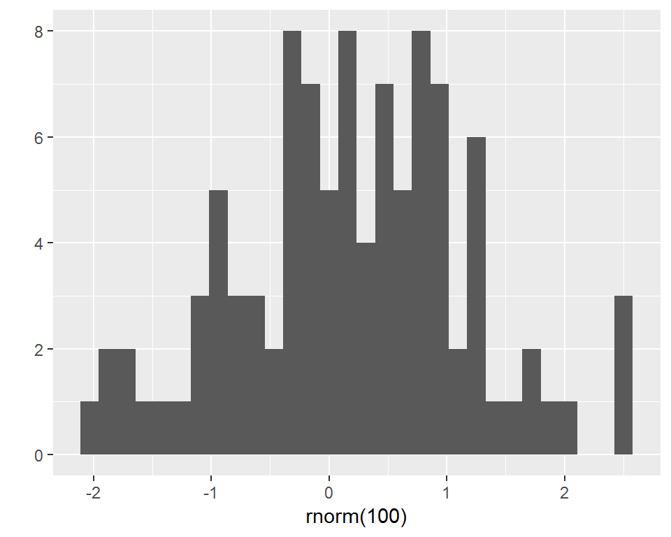
If we give it a categorical variable (character vector or factor), it will give us a bar chart:
x <- sample(LETTERS[1:4], 100, replace = T)
x## [1] "C" "D" "A" "D" "D" "C" "B" "D" "A" "C" "D" "B" "C" "C" "B" "C" "C"
## [18] "C" "C" "D" "B" "B" "D" "B" "C" "A" "B" "D" "D" "A" "A" "D" "A" "D"
## [35] "C" "C" "A" "C" "B" "D" "B" "C" "B" "B" "A" "D" "C" "D" "C" "B" "D"
## [52] "D" "C" "B" "B" "D" "D" "A" "D" "D" "D" "D" "B" "D" "D" "A" "D" "D"
## [69] "B" "D" "A" "B" "A" "C" "A" "B" "D" "D" "B" "A" "A" "B" "A" "B" "A"
## [86] "B" "B" "D" "A" "B" "A" "D" "C" "C" "D" "A" "A" "D" "C" "A"qplot(x)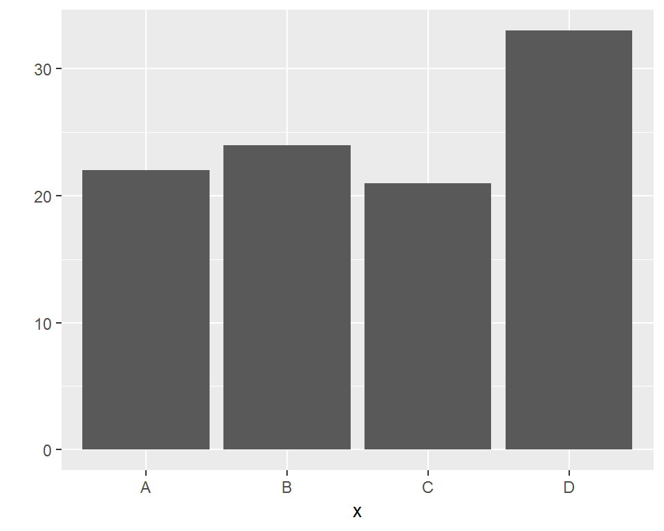
Two continuous variables will produce a scatterplot:
y <- rnorm(100)
z <- .7 * y + rnorm(100) # two correlated variables
qplot(y, z)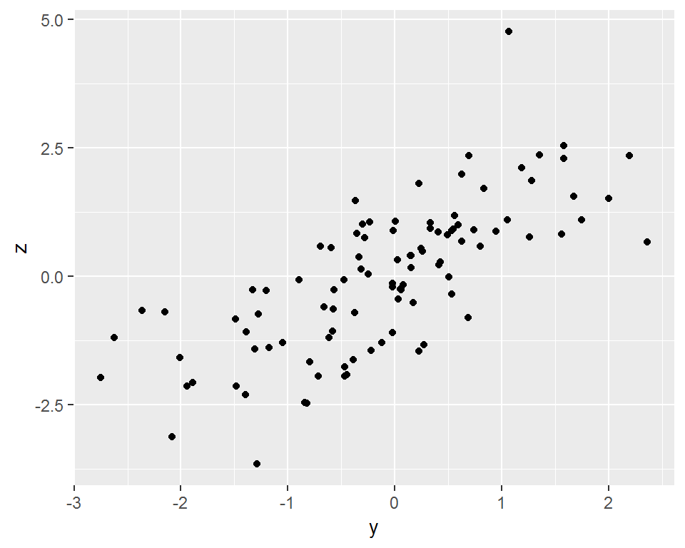
The function takes many arguments that can be used to customise the plots and select what type of plot to display (see ?qplot for details). The geom = argument specifies which plotting element (geom) to use. For instance, if we want a boxplot of a continuous variable by categorical variable, we can do:
qplot(x, y, geom = "boxplot")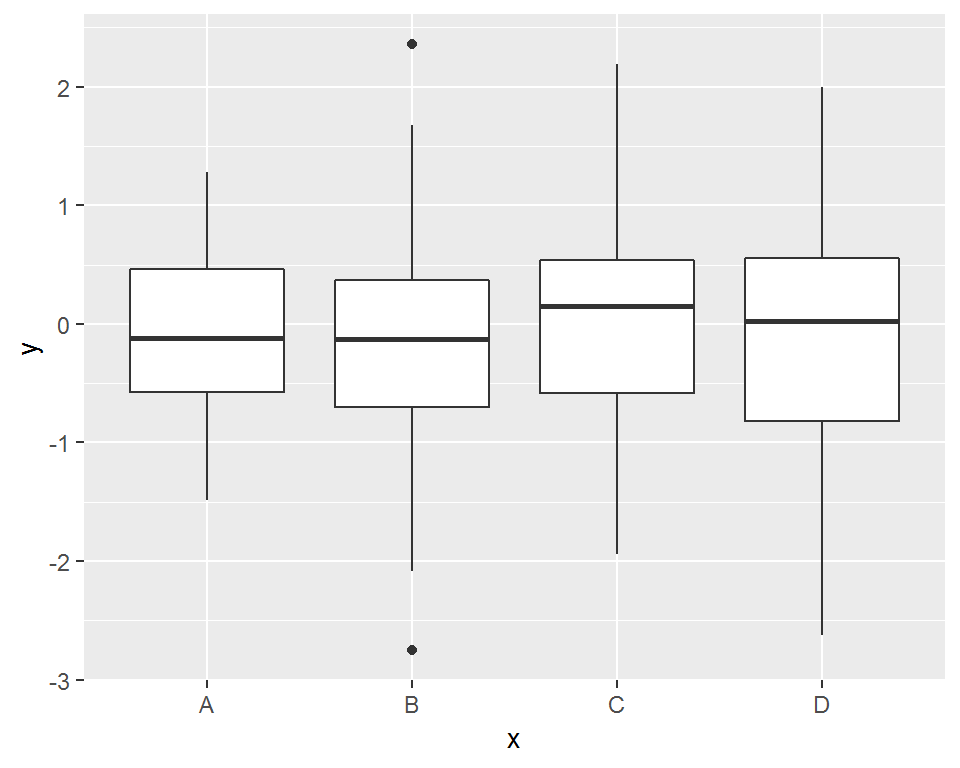
We can specify several geoms in a single qplot. For example, we may want to overlay a regression line over our scatterplot. To do this, we need to tell qplot() to use both geom point and geom smooth. Moreover, we want to specify that the method for the smoother (the function that draws the line) is the linear model “lm”. (Try omitting the method = argument and see what happens)
qplot(y, z, geom = c("point", "smooth"), method = "lm")## Warning: Ignoring unknown parameters: method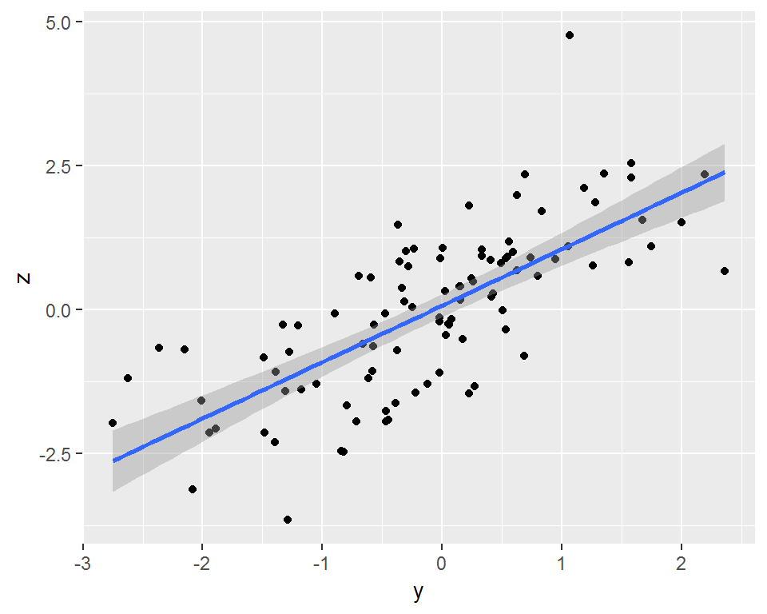
You can actually do quite a bit more with just qplot() but the main workhorse of the package is the ggplot() function.
ggplot()
Unlike qplot(), plots with ggplot() are constructed in a layered fashion. The bottom layer constructs the plotting space to which you then add layers of geoms, legends, axes, and what not. Let’s use our df_long data set from earlier to illustrate this system of layers.
To refresh your memory, this is what the first 6 rows of the data set look like:
head(df_long)## ID age time score
## 1 1 27.52251 1 3
## 2 2 22.58934 1 2
## 3 3 27.77546 1 3
## 4 4 19.64690 1 1
## 5 5 25.02997 1 2
## 6 1 27.52251 2 0Let’s start with a simple histogram of the score variable:
ggplot(df_long, aes(score)) +
geom_histogram()## `stat_bin()` using `bins = 30`. Pick better value with `binwidth`.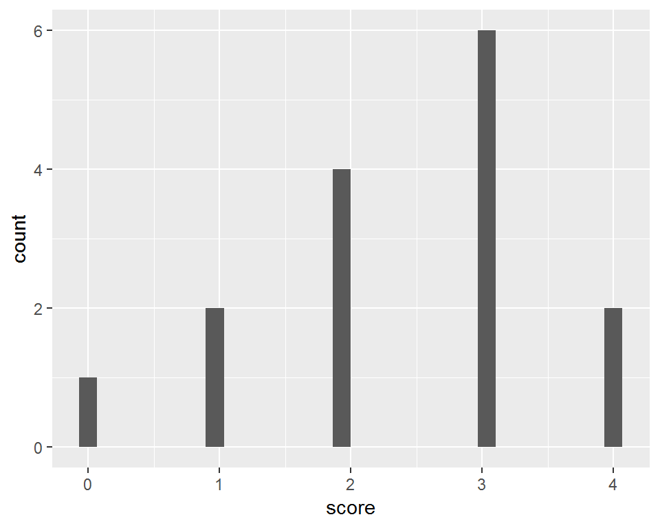
First, we used the ggplot() function to define the plotting space. We told it to work with df_long and map the score variable as the only “aesthetic”. In ggplot2 jargon, any variable that’s supposed to be responsive to various plotting functions needs to be defined as an aesthetic, inside the aes() function. The second layer tells ggplot() to add a histogram based on the variable in aes(), i.e., score.
Similarly to qplot(), we can create a scatterplot by mapping 2 variables to aes() and choosing geom_point() as the second layer:
ggplot(df_long, aes(age, score)) +
geom_point()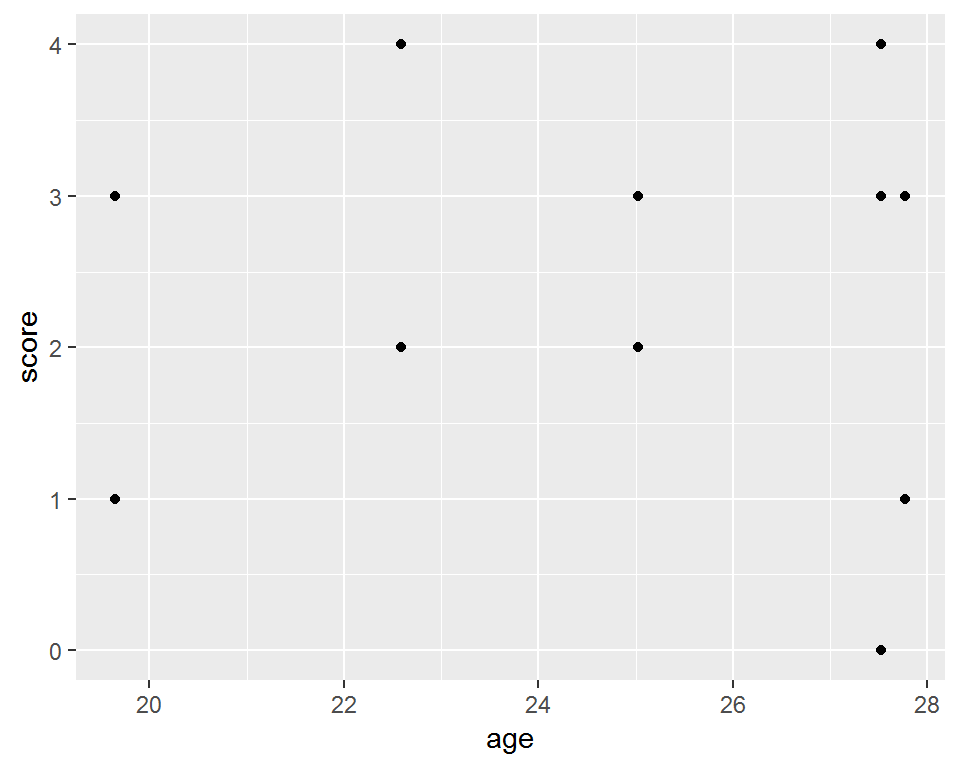
Do we want to change the colour, size, or shape of the points? No problem:
ggplot(df_long, aes(age, score)) +
geom_point(colour = "blue", size = 4, pch = 2)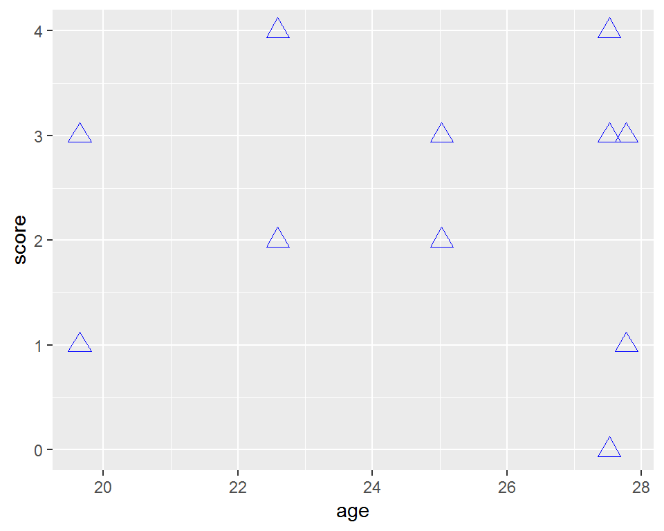
What if you want to colour the points by measurement time? To do this, we need to specify colour as an aesthetic mapping it to the desired variable:
ggplot(df_long, aes(age, score)) +
geom_point(aes(colour = time))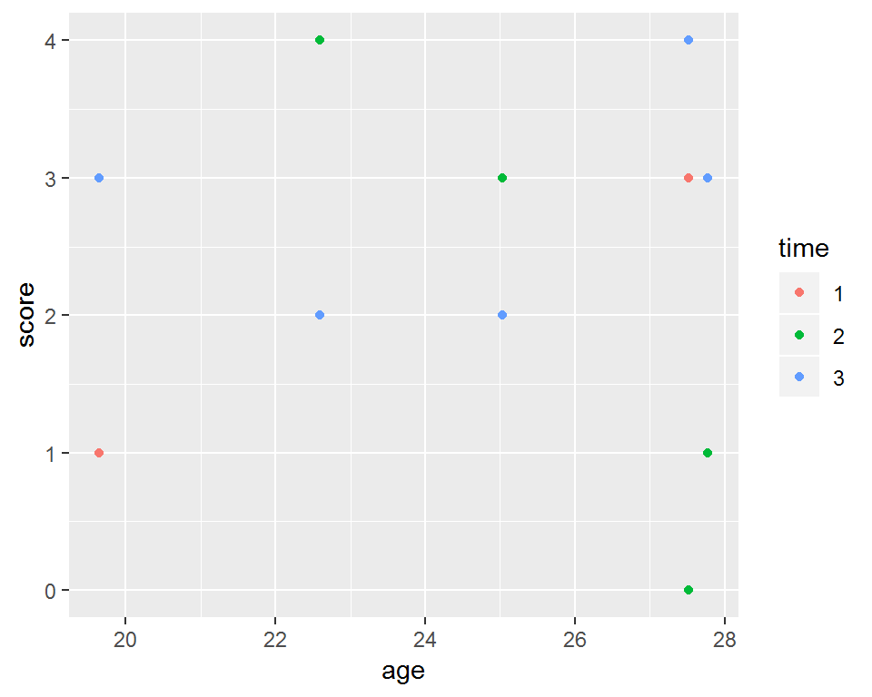
In this case, it doesn’t really matter if you put the individual aesthetics inside of the ggplot() or the geom_point() function. The difference is that whatever you put into the topmost layer (ggplot()) will get passed on to all the subsequent geoms, while the aesthetic you give to a particular geom will only apply to it. To illustrate this point, let’s add a regression line:
ggplot(df_long, aes(age, score)) +
geom_point(aes(colour = time)) + geom_smooth(method = "lm")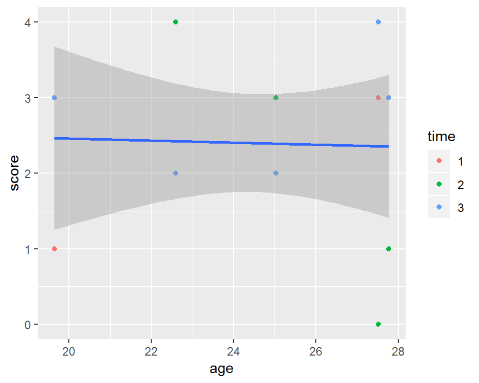
Since colour = time is given to geom_point(), it doesn’t impact geom_smooth() which only draws one line. If we want geom_smooth to draw one line per time point, we can just move the colour = argument to the topmost ggplot() layer:
ggplot(df_long, aes(age, score, colour = time)) +
geom_point() + geom_smooth(method = "lm")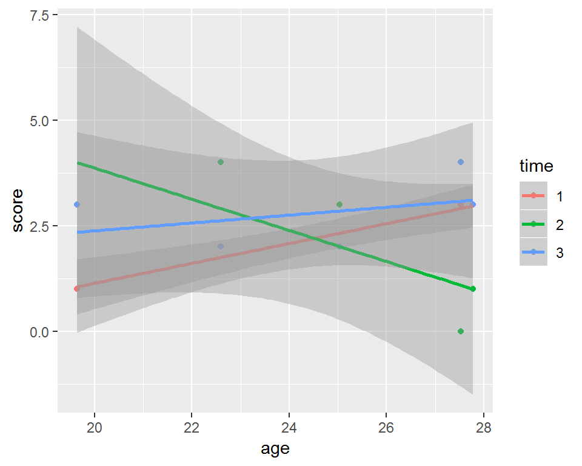
Here is an example of a standard publication-ready grouped bar plot with error bars presenting a neat representation of a \(2\times 2\) design. The data we’re plotting comes from the my_data_long data set we created at the bottom of the “Wide to long” section above.

Recall that the data set looks like this:
head(my_data_long)## id age condition measure score
## 1 1 23.71973 A 1 9
## 2 2 24.32916 A 1 7
## 3 3 27.15282 A 1 7
## 4 4 27.52434 A 1 8
## 5 5 24.61493 A 1 6
## 6 1 23.71973 A 2 8Let’s walk through the creation of this plot step by step. First of all, we need to create the summary data used for the plot. We need the mean score per condition per measure which determines the heights of the bars. For the error bars, we need to calculate the standard error according to the formula:
\[SE = \frac{\sigma}{\sqrt{n}}\]
where \(\sigma\) is the standard deviation and \(n\) is the number of observations per each combination of condition and measure.
To do this, we can use the tidyverse functions group_by() and describe() introduce earlier:
plot_data <- my_data_long %>% group_by(condition, measure) %>%
summarise(mean_score = mean(score),
se = sd(score)/sqrt(n())) # n() - function that counts number of cases
plot_data## # A tibble: 4 x 4
## # Groups: condition [?]
## condition measure mean_score se
## <chr> <int> <dbl> <dbl>
## 1 A 1 7.4 0.510
## 2 A 2 7.6 0.510
## 3 B 1 6.6 0.40
## 4 B 2 6.4 0.245Currently the measure column of plot_data is a numeric variable. Let’s change it to factor:
plot_data$measure <- factor(plot_data$measure)OK, that’s the preparation done. Let’s start building our plot, saving it into an object called p. The lowest layer will define the variables we’re plotting and specify grouping by condition:
p <- ggplot(plot_data, aes(x = measure, y = mean_score, fill = condition))
p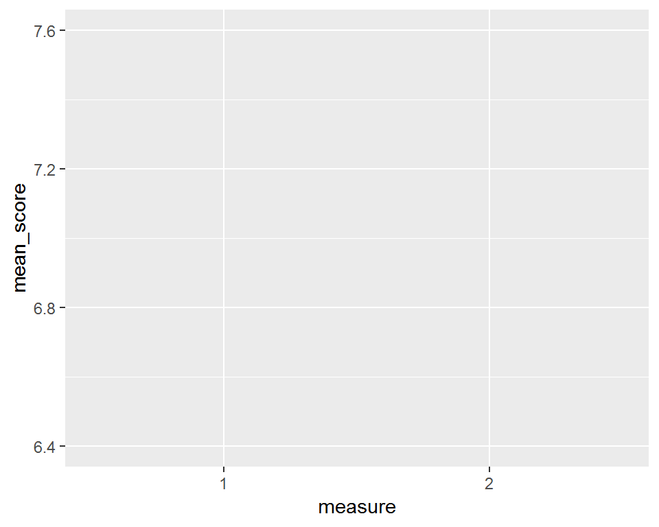
As you can see, this layer prepares the groundwork for the plot. The fill = argument is used to tell ggplot() that we want the bars to be filled using different colour by condition. Lets add the first plotting layer containing the bars and see what happens:
p + geom_bar(stat = "identity")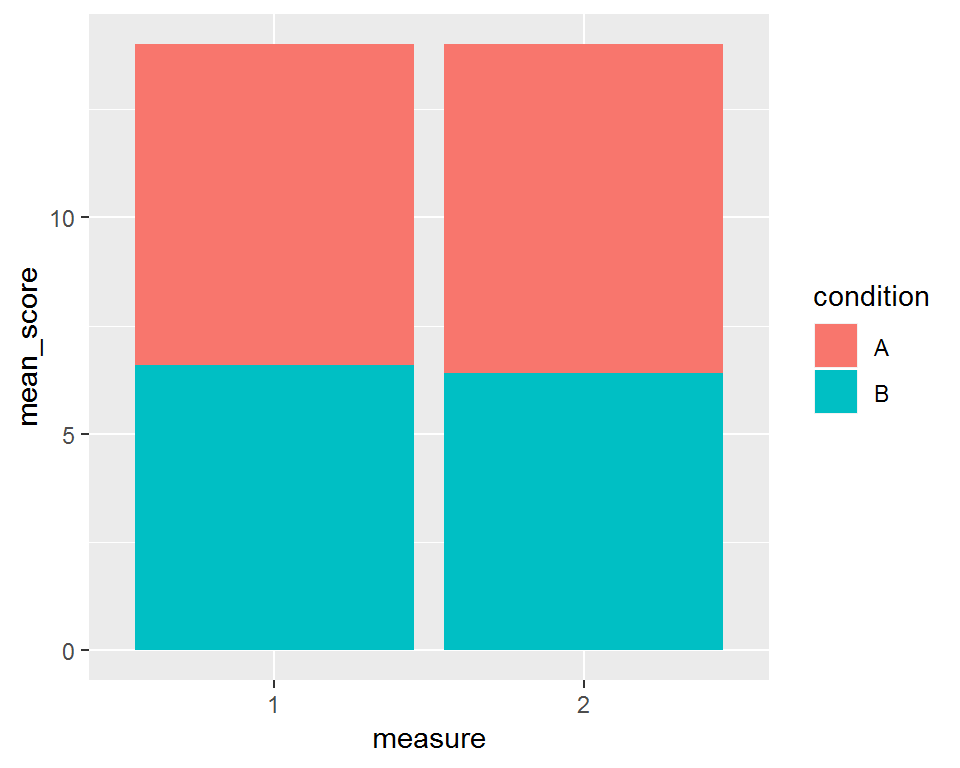
Cool, we have ourselves a stacked bar chart. The stat = argument tells R what statistical transformation to perform on the data. If we were working with raw data, we could use the mean, for example. But since our plot_data data frame contains the means we want to plot, we need to tell R to plot these values (“identity”).
We also want the bars to be side by side rather than stacked atop one another. To do that, we specify the position = argument to the value “dodge2”. This will put them side by side but, as opposed to “dodge” will put a small gap between the unstacked bars (it just looks a bit nicer that way):
p <- p + geom_bar(stat = "identity", position = "dodge2")
p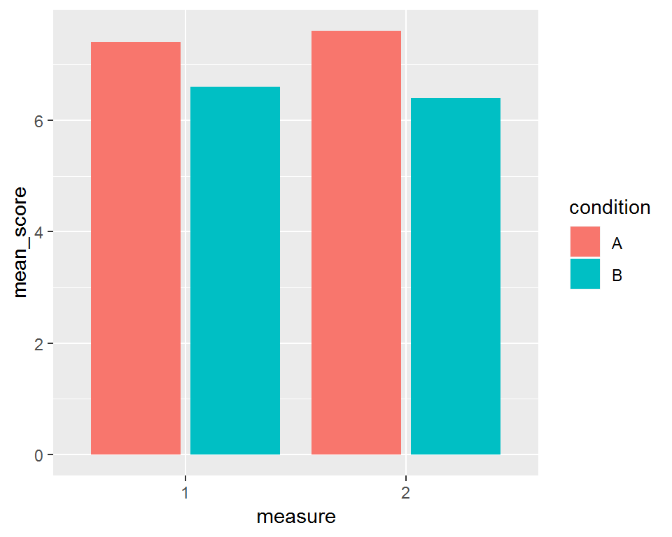
Nice! Now to add the error bars, we need to provide new aesthetics to the geom_errorbar layer, namely ymin and ymax defining the lower and upper edges of the bars respectively. The lower bound of the bars should be the mean \(-\) standard deviation and the upper bound mean + standard deviation:
p + geom_errorbar(aes(ymin = mean_score - se, ymax = mean_score + se))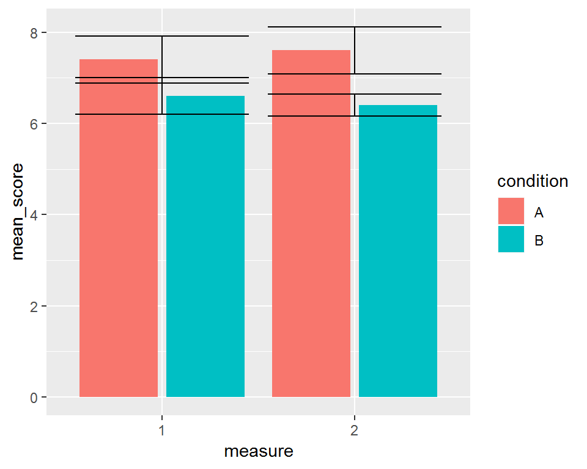
Not quite perfect… The 4 error bars are drawn in 2 positions rather than in the middle of each corresponding bar. To get them in the right place, we need to specify the position = argument using the position_dodge2() function. The difference between "dodge2" and position_dodge2() is that the former is only a shorthand for the latter and it doesn’t allow us to change the default settings of the function. However, we don’#t just want to put the error bars in the right place, we also want them to be a little thinner. To do that, we can say, that 80% of the space they now occupy should be just padding, thereby shrinking the width of the error bars:
p <- p + geom_errorbar(aes(ymin = mean_score - se, ymax = mean_score + se),
position = position_dodge2(padding = .8))
p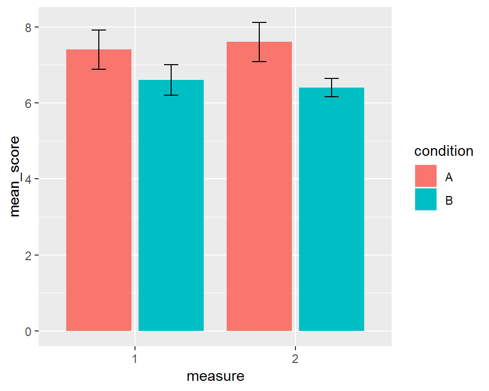
Much better. In fact, this is all the hard work done, the rest is just cosmetics. For instance, we can change the axis labels to make them look better:
p <- p + labs(x = "Measure", y = "Score")
p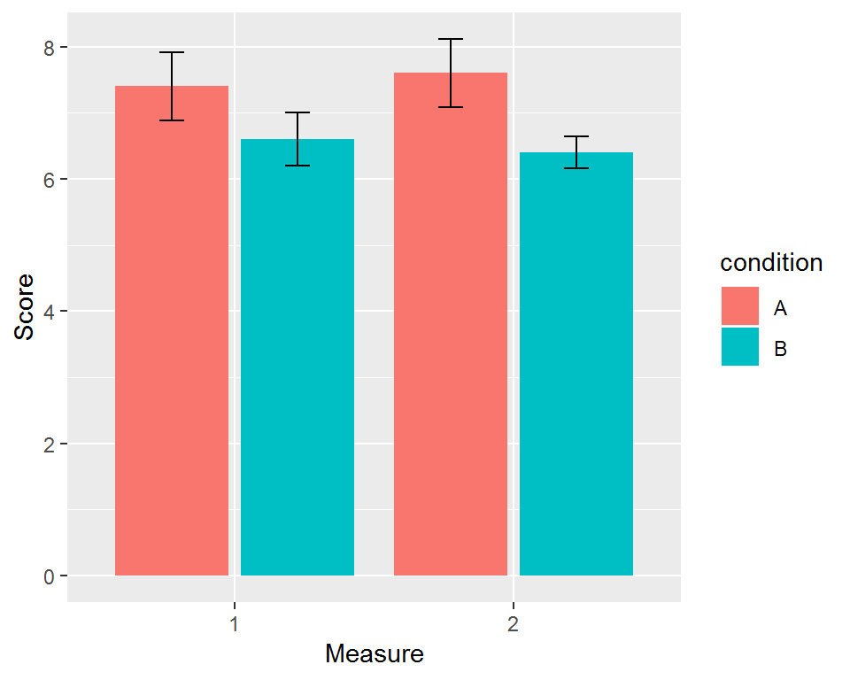
Next, we can manually change the colours and the title of the legend like this:
p <- p + scale_fill_manual(values = c("grey30", "orangered"), name = "Condition")
p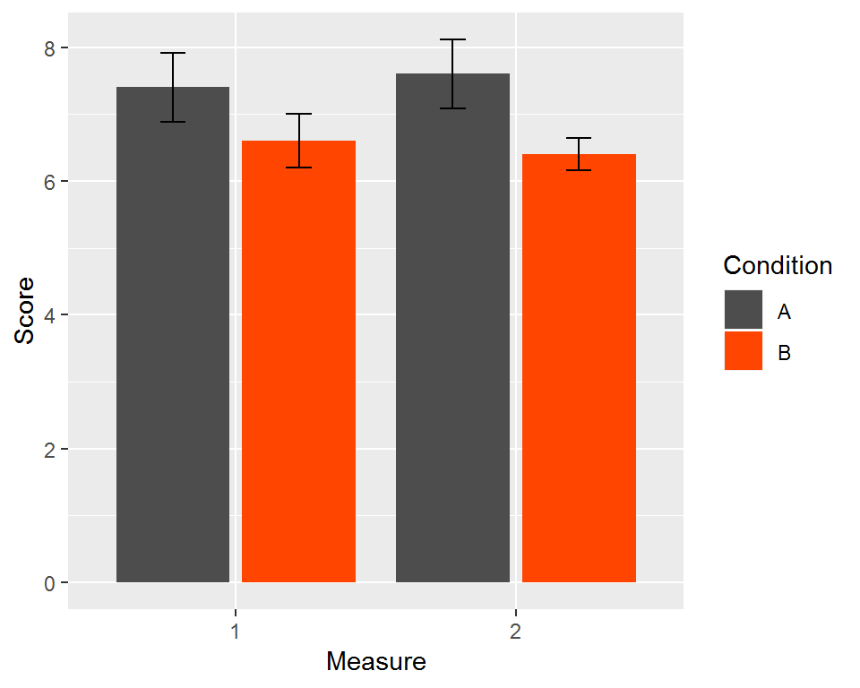
And finally, we can give the plot a bit more of a classic look using theme_classic() (other themes are available and you can even create your own):
p <- p + theme_classic()
p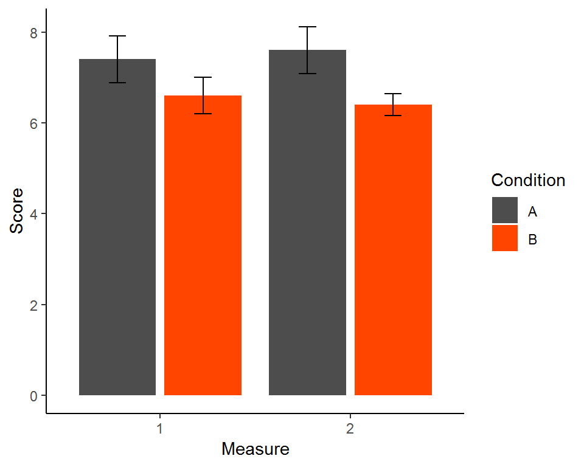
If we now want to, we can export the plot as a .png file using the ggsave() function.
ggsave("pretty_plot.png", p)Because ggplot2 is designed to work well with the rest of tidyverse, we can create the whole plot including the data for it in a single long pipeline starting with my_data_long (or even my_data, if you want):
my_data_long %>%
group_by(condition, measure) %>%
summarise(mean_score = mean(score),
se = sd(score)/sqrt(n())) %>%
mutate(measure = as.factor(measure)) %>%
ggplot(aes(x = measure, y = mean_score, fill = condition)) +
geom_bar(stat = "identity", position = "dodge2") +
geom_errorbar(aes(ymin = mean_score - se, ymax = mean_score + se),
position = position_dodge2(padding = .8)) +
labs(x = "Measure", y = "Score") +
scale_fill_manual(values = c("grey30", "orangered"), name = "Condition") +
theme_classic()
An interesting thing to point out about ggplot() is that the layers are literally built one on top of another and they are not transparent. So, if you want the error bars to be sticking out of the columns without the lower halves of the bars visible, you can first build the geom_errorbar() layer and put the geom_bar() layer on top of it:
plot_data %>%
ggplot(aes(x = measure, y = mean_score, fill = condition)) +
geom_errorbar(aes(ymin = mean_score - se, ymax = mean_score + se),
position = position_dodge2(padding = .8)) +
geom_bar(stat = "identity", position = "dodge2") +
labs(x = "Measure", y = "Score") +
scale_fill_manual(values = c("grey30", "orangered"), name = "Condition") +
theme_classic()
The logic behind building ggplot() graphs should now start making sense. Admittedly, it takes a little practice and a lot of online resources to feel reasonably confident with the package but once you get there, you will be able to create really pretty plots of arbitrary level of complexity. A good resource to refer to is the ggplot2 website, where you can find all the other geoms we don’t have the space to cover along with examples.
Useful tips
Following the principles detailed above is guaranteed to make you a better programmer so we hope you will stick to them. To help you along the way just that tiny bit more, here are a few additional tips.
Break it down
Maybe you find yourself struggling with a task and turn to StackOverflow for help. Maybe you manage to find a ready-made answer to your problem or maybe some helpful soul writes one just for you. And maybe it works but you don’t quite understand why.
These things happen and sometimes a line of code can appear quite obscure. Take for example:
for (i in 1:10) eval(parse(text = paste0(
"df_", i, " <- as.data.frame(matrix(rnorm(100 * ", i ,", 0, ", i, "), ncol = i))")))When faced with a bit of code like this, it is generally a good idea to try to reverse-engineer it. Let’s give it a go.
First, we can see that this is a for loop that repeats itself 10 times: it starts by assigning the value of 1 to the iterator object i, then executes the code, increments i by 1 and repeats until i == 10. So to look what the code inside the loop does, we need to set i to some value (1 is a reasonable choice).
i <- 1Now, let’s start by running the code from the innermost command outwards:
paste0("df_", i, " <- as.data.frame(matrix(rnorm(100 * ", i ,", 0, ", i, "), ncol = i))")## [1] "df_1 <- as.data.frame(matrix(rnorm(100 * 1, 0, 1), ncol = i))"Right, so the first command created a character string that looks like a command. Let’s break it down even further:
rnorm(100 * 1, 0, 1)## [1] -1.047907263 0.334647380 0.435923495 -0.480989597 1.702518182
## [6] -0.370730068 1.052210386 1.108929130 0.018052376 1.279100669
## [11] -1.504444115 0.424034485 -1.204517636 -0.021164629 1.211853449
## [16] 0.332288148 1.078427383 1.025987337 0.172459867 0.795208031
## [21] 0.440109993 -0.827218657 0.596764479 0.745033312 -3.025576114
## [26] -1.762091803 0.413914646 0.845674843 -0.694720934 -0.308303527
## [31] 1.195282698 -0.911274774 0.115036852 0.539872015 2.341801712
## [36] -0.190848300 0.461041703 -0.184094516 2.208509955 1.044633826
## [41] -0.786850302 -0.054910095 0.252311968 1.319205985 -0.364450048
## [46] 1.001338090 -1.540652875 -0.669952228 0.355237452 0.245582746
## [51] 0.815361338 -1.470188139 0.922409071 1.359885235 0.047637818
## [56] -0.139715380 0.536770964 0.714087608 -2.007776828 1.353881648
## [61] 1.388877526 1.640218197 -0.962296390 -1.649831027 -0.336591424
## [66] -0.524440172 -1.461580211 1.786026822 -0.081735195 0.550506575
## [71] -0.790132175 -0.778848364 -1.538555873 0.486646149 -1.480791963
## [76] 1.274834396 -0.381704736 -1.392629198 1.840397983 1.874917568
## [81] 0.445369658 -0.485186904 1.255907351 1.095966740 -0.054362077
## [86] 0.064135598 -0.832767137 1.154166817 -0.009764447 -1.420798097
## [91] -0.666841665 -0.260189689 -1.241116990 -0.312476256 0.585133232
## [96] 0.220116142 0.321966905 -0.125602859 0.144848682 -1.150526461OK, this is easy. The first bit generates \(100 \times i\) random numbers with a mean of zero and a standard deviation of i. Let’s move one layer out:
# printout truncated to first 10 lines
matrix(rnorm(100 * 1, 0, 1), ncol = i)## [,1]
## [1,] 0.03877248
## [2,] -0.69695493
## [3,] 0.55118318
## [4,] -0.40594141
## [5,] -0.32389321
## [6,] -0.99335789
## [7,] -1.93083243
## [8,] -0.85998697
## [9,] 1.77928830
## [10,] 1.37858208
## [ reached getOption("max.print") -- omitted 90 rows ]This command put those numbers into a matrix with 100 rows and i columns. Next:
df_1 <- as.data.frame(matrix(rnorm(100 * 1, 0, 1), ncol = i))This line converts the matrix into a data.frame and stored it in an object called “df_i”. Remember, i takes values of 1-10, increasingly each time the loop is repeated.
All good thus far but why is the command a character string (in “quotes”)? What is that good for? Well, turns out that the parse() function can take a string with a valid R code inside and turn it to an expression:
parse(text = paste0("df_", i, " <- as.data.frame(matrix(rnorm(100 * ",
i ,", 0, ", i, "), ncol = i))"))## expression(df_1 <- as.data.frame(matrix(rnorm(100 * 1, 0, 1),
## ncol = i)))
This expression can be then evaluated using the eval() function:
eval(parse(text = paste0(
"df_", i, " <- as.data.frame(matrix(rnorm(100 * ", i , ", 0, ", i, "), ncol = i))")))
# printout truncated
df_1## V1
## 1 -0.2964653
## 2 -1.1495345
## 3 1.4206396
## 4 0.2983326
## 5 1.8263633
## 6 -0.8628447
## 7 1.1240684
## 8 -2.1283718
## 9 -0.2896466
## 10 -0.5050959
## [ reached 'max' / getOption("max.print") -- omitted 90 rows ]So what the entire loop does is create 10 data frames named df_1 to df_10, each containing 100 rows and a different number of columns (1 for df_1, 6 for df_6 etc.) with random numbers. Moreover, each data.frame contains random numbers with different standard deviations.
And so, just like that, with a single line of code we can create 10 (or more!) different R objects with different properties. Cool, isn’t it? Hope this example demonstrates how, using systematic reverse-engineering, you can come to understand even a daunting-looking code with functions you haven’t seen before.
Handy functions that return logicals
Finally, here are some useful functions with which you might want to familiarise yourself. They will make cleaning your data much easier.
==, takes avector,matrix, or adata.frameand compares every element thereof to a single value. Returns alogical vectorwithTRUEfor elements that are equal to the compared value andFALSEotherwise. ComparingNAreturnsNA.c(1:5, NA) == c(100, 2, 2, 8, 5, 9)## [1] FALSE TRUE FALSE FALSE TRUE NA<, same as==, butTRUEis returned if element is less than the compared value.>, same as==, butTRUEis returned if element is greater than the compared value.<=, same as==, butTRUEis returned if element is less than or equal to the compared value. In other words, it is a negation of (complementary operation to)>.>=, same as==, butTRUEis returned if element is greater than or equal to the compared value. Negation of<.%in%, same as==, but can take avectoron the right hand side. Each element of thevector/matrix/data.frameto the left is compared to each element of the vector to the right. For example:c(1:5, NA) %in% c(100, 4, 2, 8)## [1] FALSE TRUE FALSE TRUE FALSE FALSE- all functions that begin with ‘
is’, e.g.:is.na(), takes avector,matrix, or adata.frameand returns alogical vectorwithTRUEif given element is anNAandFALSEotherwise.is.numeric(), takes any object and returnsTRUEif it is a numeric vector andFALSEotherwise.is.factor(),is.matrix(),is.data.frame(),is.list(), same asis.numeric()but returnTRUEif the object provided is afactor,matrix,data.frame, orlist, respectively.isTRUE(), returns a singleTRUEif the expression provided evaluates toTRUEand a singleFALSEotherwise. OnlyisTRUE(TRUE)returnsTRUE.isTRUE(FALSE),isTRUE(c(TRUE, TRUE))and anything else returnsFALSE. Works withNAs so can be useful for combining with logical operators that returnNAwhen comparing missing values. For example
NA > 4## [1] NAisTRUE(NA > 4)## [1] FALSE any(), takes a logical vector and returnsTRUEif any of its elements equalsTRUE, andFALSEotherwise, e.g.,any(1:5> 4)returnsTRUE.all(), likeany()but returnsTRUEonly if all of the elements of the vector provided areTRUE.all.equal(), takes two objects and returnsTRUEif they are identical and a vector of all discrepancies otherwise. Sensitive to attributes soall.equal(1:5, factor(1:5))does not returnTRUE. Good to use along withisTRUE()!all.equal(df, df)## [1] TRUEall.equal(df, my_list)## [1] "Names: 3 string mismatches" ## [2] "Attributes: < names for target but not for current >" ## [3] "Attributes: < Length mismatch: comparison on first 0 components >" ## [4] "Length mismatch: comparison on first 3 components" ## [5] "Component 1: Lengths: 5, 20" ## [6] "Component 1: Attributes: < target is NULL, current is list >" ## [7] "Component 1: target is numeric, current is matrix" ## [8] "Component 2: Modes: numeric, character" ## [9] "Component 2: target is numeric, current is character" ## [10] "Component 3: Modes: numeric, list" ## [ reached getOption("max.print") -- omitted 4 entries ]# use with isTRUE() if T/F desired isTRUE(all.equal(1:5, factor(1:5)))## [1] FALSE&, “AND” takes two Booleans and returnsTRUEif both of them areTRUE,NAif either isNA, andFALSEotherwise. Can be applied over twological vectorsof the same length:c(T, T, F) & c(T, T, T)## [1] TRUE TRUE FALSE|, “OR” is the same as&but returnsTRUEif either or both of the two compared elements isTRUE.xor(), “exclusive OR” is same as above but returnsTRUEonly if either the first or the second, but not both of the two compared elements, isTRUE.xor(c(T, F, F), c(T, F, T))## [1] FALSE FALSE TRUE&&and||, single-element versions of&and|. They only compare the first element of both of the vectors provided (i.e., x[1] vs y[1]):c(T, F, F) || c(T, F, T)## [1] TRUE- all of the above can be negated using the ‘
!’ operator, e.g.:x != y!x > y!is.na(x)!any(is.na(x))is equivalent toall(!is.na(x))!(x & y)is equivalent toxor(x, y) | (!x & !y)
An important insight immortalised by Newton Crosby in the 1986 cult movie Short Circuit: “It’s a machine, Schroeder. It doesn’t get pissed off. It doesn’t get happy, it doesn’t get sad, it doesn’t laugh at your jokes. It just runs programs.”↩
Open Science Collaboration. (2015). Estimating the reproducibility of psychological science. Science, 349(6251), aac4716.↩